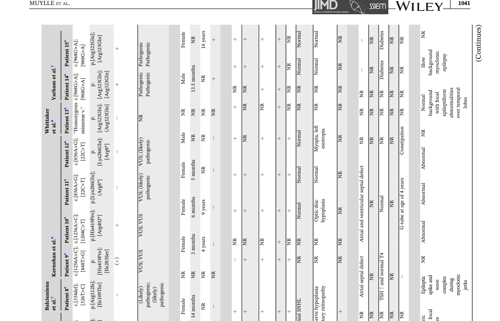

COXPD35 is the combined oxidative phosphorylation deficiency caused by biallelic variants in TRIT1, the nuclear gene for tRNA isopentenyltransferase. TRIT1 adds an isopentenyl group to N6 of adenosine 37, immediately 3' of the anticodon, on a small subset of tRNAs that carry the A36-A37-A38 recognition sequence. It is one of the few tRNA-modifying enzymes that acts in both compartments: it modifies cytosolic tRNAs, and an amino-terminal mitochondrial targeting sequence takes it into the matrix to modify mitochondrial tRNAs, including mt-tRNA-Ser(UCN). The disease was defined in 2014 in two siblings of a consanguineous family homozygous for p.Arg323Gln. Their cells lacked i6A37 on both cytosolic and mitochondrial tRNAs, mitochondrial protein synthesis was generally reduced, and skeletal muscle showed a combined deficiency of complexes I and IV. Wild-type TRIT1 restored the modification in patient fibroblasts. About sixteen further patients have since been reported, most with private missense, splice or truncating alleles. Clinically it is an infantile-onset neurological disorder. Every reported patient has seizures, most of them myoclonic, with global developmental delay, speech delay and, in most, microcephaly. Spasticity, hypotonia, strabismus, optic disc hypoplasia and structural brain changes (thin corpus callosum, delayed myelination, atrophy) recur. Truncating alleles have been linked to a more severe picture with polymicrogyria, hearing and visual loss. Unlike many mitochondrial translation defects, lactate is usually normal. Severity ranges from drug-resistant epilepsy with profound disability to treatable seizures and mild delay. Two parts of the mechanism are not settled, and the entry leaves them open. The first is why a defect that removes i6A37 from cytosolic as well as mitochondrial tRNAs produces a disease that looks mitochondrial. The second is how an OXPHOS defect measured in fibroblasts and muscle produces a brain-limited phenotype with normal lactate. There is no animal model of the human disease, no natural-history study and no disease-specific treatment.
Ask a research question about Combined Oxidative Phosphorylation Deficiency 35. OpenScientist will conduct autonomous deep research using the Disorder Mechanisms Knowledge Base and PubMed literature (typically 10-30 minutes).
Do not include personal health information in your question. Questions and results are cached in your browser's local storage.
name: Combined Oxidative Phosphorylation Deficiency 35
category: Mendelian
creation_date: "2026-10-01T20:15:46Z"
synonyms:
- COXPD35
- combined oxidative phosphorylation deficiency type 35
- TRIT1 deficiency
- TRIT1-related mitochondrial disorder
disease_term:
preferred_term: combined oxidative phosphorylation deficiency 35
term:
id: MONDO:0054742
label: combined oxidative phosphorylation deficiency 35
description: >-
COXPD35 is the combined oxidative phosphorylation deficiency caused by biallelic variants in
TRIT1, the nuclear gene for tRNA isopentenyltransferase. TRIT1 adds an isopentenyl group to
N6 of adenosine 37, immediately 3' of the anticodon, on a small subset of tRNAs that carry
the A36-A37-A38 recognition sequence. It is one of the few tRNA-modifying enzymes that acts
in both compartments: it modifies cytosolic tRNAs, and an amino-terminal mitochondrial
targeting sequence takes it into the matrix to modify mitochondrial tRNAs, including
mt-tRNA-Ser(UCN).
The disease was defined in 2014 in two siblings of a consanguineous family homozygous for
p.Arg323Gln. Their cells lacked i6A37 on both cytosolic and mitochondrial tRNAs, mitochondrial
protein synthesis was generally reduced, and skeletal muscle showed a combined deficiency of
complexes I and IV. Wild-type TRIT1 restored the modification in patient fibroblasts. About
sixteen further patients have since been reported, most with private missense, splice or
truncating alleles.
Clinically it is an infantile-onset neurological disorder. Every reported patient has
seizures, most of them myoclonic, with global developmental delay, speech delay and, in most,
microcephaly. Spasticity, hypotonia, strabismus, optic disc hypoplasia and structural brain
changes (thin corpus callosum, delayed myelination, atrophy) recur. Truncating alleles have
been linked to a more severe picture with polymicrogyria, hearing and visual loss. Unlike many
mitochondrial translation defects, lactate is usually normal. Severity ranges from
drug-resistant epilepsy with profound disability to treatable seizures and mild delay.
Two parts of the mechanism are not settled, and the entry leaves them open. The first is why
a defect that removes i6A37 from cytosolic as well as mitochondrial tRNAs produces a disease
that looks mitochondrial. The second is how an OXPHOS defect measured in fibroblasts and
muscle produces a brain-limited phenotype with normal lactate. There is no animal model of the
human disease, no natural-history study and no disease-specific treatment.
parents:
- Combined Oxidative Phosphorylation Deficiency
- Mitochondrial Disease
classifications:
harrisons_chapter:
- classification_value: GENETICS_ENVIRONMENT_DISEASE
notes: >-
A Mendelian, mechanism-defined mitochondrial disorder, diagnosed as an inherited disease
rather than within a single organ-system Part.
mechanistic_category:
- classification_value: mitochondrial disease
icimd_category:
- classification_value: mtdna_transcript_processing_and_modification
notes: >-
TRIT1 is a nuclear-encoded enzyme that modifies mitochondrial tRNAs post-transcriptionally,
which places the disorder with the mitochondrial tRNA-modification defects (as for TRMT5
in COXPD26) rather than with a respiratory-chain subunit or assembly factor. TRIT1 also
modifies cytosolic tRNAs, which ICIMD does not capture.
references:
- reference: PMID:24901367
title: Defective i6A37 modification of mitochondrial and cytosolic tRNAs results from pathogenic mutations in TRIT1 and its substrate tRNA.
- reference: PMID:28185376
title: Matchmaking facilitates the diagnosis of an autosomal-recessive mitochondrial disease caused by biallelic mutation of the tRNA isopentenyltransferase (TRIT1) gene.
- reference: PMID:36047296
title: "TRIT1 defect leads to a recognizable phenotype of myoclonic epilepsy, speech delay, strabismus, progressive spasticity, and normal lactate levels."
- reference: PMID:36049610
title: "TRIT1 deficiency: Two novel patients with four novel variants."
- reference: PMID:35418828
title: A Case of Combined Oxidative Phosphorylation Deficiency 35 Associated with a Novel Missense Variant of the TRIT1 Gene.
- reference: PMID:32948376
title: The first Korean cases of combined oxidative phosphorylation deficiency 35 with two novel TRIT1 mutations in two siblings confirmed by clinical and molecular investigation.
- reference: PMID:31140736
title: Noninvasive diagnosis of TRIT1-related mitochondrial disorder by measuring i(6) A37 and ms(2) i(6) A37 modifications in tRNAs from blood and urine samples.
- reference: PMID:41760017
title: A case report of combined oxidative phosphorylation deficiency 35 (COXPD35) in Palestine caused by novel compound heterozygous TRIT1 variants.
- reference: PMID:40908562
title: Identification of a Novel TRIT1 Mutation in a Consanguineous Iranian-Azeri-Turkish Family With Global Developmental Delay.
- reference: PMID:32324744
title: "Targeting mitochondrial and cytosolic substrates of TRIT1 isopentenyltransferase: Specificity determinants and tRNA-i6A37 profiles."
- reference: PMID:26857223
title: "Lack of tRNA-i6A modification causes mitochondrial-like metabolic deficiency in S. pombe by limiting activity of cytosolic tRNATyr, not mito-tRNA."
- reference: PMID:34768885
title: "The Effect of tRNA([Ser]Sec) Isopentenylation on Selenoprotein Expression."
inheritance:
- name: Autosomal recessive inheritance
description: >-
All reported patients carry biallelic TRIT1 variants. Some are homozygous, usually from
consanguineous families. Others are compound heterozygous from non-consanguineous ones. In
the founding family both affected siblings were homozygous for p.Arg323Gln. The unaffected
brother and both parents were heterozygous carriers.
inheritance_term:
preferred_term: Autosomal recessive inheritance
term:
id: HP:0000007
label: Autosomal recessive inheritance
evidence:
- reference: PMID:24901367
reference_title: Defective i6A37 modification of mitochondrial and cytosolic tRNAs results from pathogenic mutations in TRIT1 and its substrate tRNA.
supports: SUPPORT
evidence_source: HUMAN_CLINICAL
snippet: "Targeted resequencing of TRIT1 confirmed that the proband (II-3; arrow), and his clinically affected sister (II-1) are homozygous for the c.968G>A TRIT1 mutation, while his unaffected older brother (II-2) and both of his parents (I-1 and I-2) are heterozygous carriers."
explanation: Segregation of the founding allele in the first family is recessive.
- reference: PMID:35418828
reference_title: A Case of Combined Oxidative Phosphorylation Deficiency 35 Associated with a Novel Missense Variant of the TRIT1 Gene.
supports: SUPPORT
evidence_source: HUMAN_CLINICAL
snippet: "Combined oxidative phosphorylation deficiency 35 (COXPD35) is a rare autosomal recessive disorder associated with homozygous or compound heterozygous mutations in the tRNA isopentenyltransferase (TRIT1) gene in chromosome 1p34.2."
explanation: States the recessive inheritance and both biallelic configurations.
pathophysiology:
- name: Biallelic TRIT1 Variants
biological_scale: MOLECULAR
description: >-
Two damaged copies of TRIT1. The alleles are mostly private. They include homozygous
missense variants (p.Arg323Gln in the founding family, p.Met82Ile), compound heterozygous
missense, splice and nonsense combinations (p.Glu327Lys with c.682+2T>C; p.Ile109Thr with
p.Arg327*; p.Arg323Trp with p.Glu295Glyfs*8), and a homozygous splice-acceptor variant
(c.1235-3C>G). p.Arg323Gln does not lower TRIT1 protein levels. It replaces one of a row of
basic residues that contact the anticodon stem of the substrate tRNA. Structural modelling
put it at substrate binding rather than catalysis. The missense alleles are therefore
hypomorphic rather than null.
genes:
- preferred_term: TRIT1
term:
id: hgnc:20286
label: TRIT1
genetic_context:
genes:
- preferred_term: TRIT1
term:
id: hgnc:20286
label: TRIT1
allele_type: missense, splice-site and truncating variants, homozygous or compound heterozygous
variant_origin: GERMLINE
functional_impact_category: LOSS_OF_FUNCTION
description: >-
Zygosity differs between families, so the slot is left unset rather than asserting one
family's configuration for all.
notes: >-
LOSS_OF_FUNCTION rests on the founding p.Arg323Gln family. In those cells i6A37 was lost
from both tRNA pools and wild-type TRIT1 restored it. Most later alleles were called
pathogenic from segregation and in-silico prediction. Two later patients showed reduced
TRIT1 isoform 1 protein on immunoblot, and one showed reduced i6A and ms2i6A in blood and
urine.
evidence:
- reference: PMID:24901367
reference_title: Defective i6A37 modification of mitochondrial and cytosolic tRNAs results from pathogenic mutations in TRIT1 and its substrate tRNA.
supports: SUPPORT
evidence_source: HUMAN_CLINICAL
snippet: "Using next-generation exome sequencing, we identified in a patient with severe combined mitochondrial respiratory chain defects and corresponding perturbation in mitochondrial protein synthesis, a homozygous p.Arg323Gln mutation in TRIT1."
explanation: The founding allele, found by exome sequencing in a patient with a combined respiratory-chain defect.
- reference: PMID:32948376
reference_title: The first Korean cases of combined oxidative phosphorylation deficiency 35 with two novel TRIT1 mutations in two siblings confirmed by clinical and molecular investigation.
supports: SUPPORT
evidence_source: HUMAN_CLINICAL
snippet: "The whole exome sequencing results revealed a compound heterozygous novel variant, c.979G > A (p.Glu327Lys) and c.682 + 2 T > C, on TRIT1 exon 8 and intron 5, respectively, which was confirmed by Sanger sequencing."
explanation: A compound heterozygous missense plus canonical splice-site configuration.
- reference: PMID:24901367
reference_title: Defective i6A37 modification of mitochondrial and cytosolic tRNAs results from pathogenic mutations in TRIT1 and its substrate tRNA.
supports: SUPPORT
evidence_source: IN_VITRO
snippet: "Immunoblotting of TRIT1 in fibroblasts from the proband demonstrated no significant loss of protein levels in comparison to control fibroblasts"
explanation: >-
The founding missense allele leaves protein abundance intact, so its effect is on
enzyme function rather than stability.
downstream:
- target: Reduced tRNA Isopentenyltransferase Activity
causal_link_type: DIRECT
- name: Reduced tRNA Isopentenyltransferase Activity
biological_scale: MOLECULAR
description: >-
TRIT1 transfers the dimethylallyl group of dimethylallyl pyrophosphate to N6 of A37. In the
founding family the patient protein was present but the cells were severely deficient in the
product. Recombinant p.Arg323Gln TRIT1 had lower activity towards several tRNA substrates in
vitro. The reduction is substrate-dependent rather than a loss of catalysis. Heavy
overexpression of the mutant enzyme restored modification of the cytosolic substrate tested
almost fully, but restored the mitochondrial substrate poorly.
genes:
- preferred_term: TRIT1
term:
id: hgnc:20286
label: TRIT1
molecular_functions:
- preferred_term: tRNA isopentenyltransferase activity
modifier: DECREASED
term:
id: GO:0052381
label: tRNA dimethylallyltransferase activity
evidence:
- reference: PMID:24901367
reference_title: Defective i6A37 modification of mitochondrial and cytosolic tRNAs results from pathogenic mutations in TRIT1 and its substrate tRNA.
supports: SUPPORT
evidence_source: OTHER
quote_role: BACKGROUND
snippet: "This gene encodes human tRNA isopentenyltransferase, which is responsible for i6A37 modification of the anticodon loops of a small subset of cytosolic and mitochondrial tRNAs."
explanation: The enzyme's function and its two substrate pools, stated as background.
- reference: PMID:34768885
reference_title: "The Effect of tRNA([Ser]Sec) Isopentenylation on Selenoprotein Expression."
supports: SUPPORT
evidence_source: IN_VITRO
snippet: "However, recombinant human TRIT1R323Q had significantly diminished activities towards several tRNA substrates in vitro."
explanation: Direct biochemical measurement of reduced enzyme activity for the founding allele.
- reference: PMID:24901367
reference_title: Defective i6A37 modification of mitochondrial and cytosolic tRNAs results from pathogenic mutations in TRIT1 and its substrate tRNA.
supports: SUPPORT
evidence_source: IN_VITRO
snippet: "In notable contrast to the rescue of cy-tRNASer(UGA) hypomodification, the hypomodification of mt-tRNASer(UCN) was rescued more efficiently by wild-type TRIT1 than mutant TRIT1 (Figure 5B)."
explanation: >-
The mutant enzyme is weaker on the mitochondrial substrate than on the cytosolic one. This
is one candidate reason why the phenotype tracks mitochondrial function.
downstream:
- target: i6A37 Hypomodification of Mitochondrial tRNAs
causal_link_type: DIRECT
- target: i6A37 Hypomodification of Cytosolic tRNAs
causal_link_type: DIRECT
- name: i6A37 Hypomodification of Mitochondrial tRNAs
biological_scale: MOLECULAR
description: >-
Patient fibroblasts were severely deficient in i6A37 on mitochondrial tRNAs, measured on
mt-tRNA-Ser(UCN). Wild-type TRIT1 corrected this. The unmodified mt-tRNA-Ser(UCN) was also
less stable, with steady-state levels about 40 percent lower. The defect is therefore both
less active tRNA and less tRNA. In mammalian mitochondria the i6A37 product is further
methylthiolated to ms2i6A37, and both were sharply reduced in blood and urine RNA of a later
patient. This gives a non-invasive readout of the same lesion.
biological_processes:
- preferred_term: mitochondrial tRNA i6A37 modification
modifier: DECREASED
term:
id: GO:0070900
label: mitochondrial tRNA modification
evidence:
- reference: PMID:24901367
reference_title: Defective i6A37 modification of mitochondrial and cytosolic tRNAs results from pathogenic mutations in TRIT1 and its substrate tRNA.
supports: SUPPORT
evidence_source: IN_VITRO
snippet: "We show that patient cells bearing the p.Arg323Gln TRIT1 mutation are severely deficient in i6A37 in both cytosolic and mitochondrial tRNAs."
explanation: Direct measurement of the modification defect in patient cells.
- reference: PMID:24901367
reference_title: Defective i6A37 modification of mitochondrial and cytosolic tRNAs results from pathogenic mutations in TRIT1 and its substrate tRNA.
supports: SUPPORT
evidence_source: IN_VITRO
snippet: "The modification appears to be influential on mt-tRNASer(UCN) stability, as steady-state levels are decreased by 40% in the patient."
explanation: The hypomodified mitochondrial tRNA is also less abundant.
- reference: PMID:31140736
reference_title: Noninvasive diagnosis of TRIT1-related mitochondrial disorder by measuring i(6) A37 and ms(2) i(6) A37 modifications in tRNAs from blood and urine samples.
supports: SUPPORT
evidence_source: HUMAN_CLINICAL
snippet: "A mass spectrometry analysis of RNA nucleoside obtained from the subject's peripheral blood and urine showed a marked decrease in both i6 A and ms2 i6 A modifications."
explanation: The same lesion shown in a second, compound heterozygous patient, in body fluids.
- reference: PMID:32324744
reference_title: "Targeting mitochondrial and cytosolic substrates of TRIT1 isopentenyltransferase: Specificity determinants and tRNA-i6A37 profiles."
supports: SUPPORT
evidence_source: IN_VITRO
snippet: "We show that TRIT1 encodes an amino-terminal mitochondrial targeting sequence (MTS) that directs mitochondrial import and modification of mitochondrial-tRNAs."
explanation: How the nuclear-encoded enzyme reaches its mitochondrial substrates.
downstream:
- target: Impaired Mitochondrial Protein Synthesis
causal_link_type: DIRECT
description: >-
Missing i6A37 lowers the decoding activity of the modified tRNAs, and the unmodified
mt-tRNA-Ser(UCN) is also less abundant. The founding report proposes both effects
together as the cause of the translation defect.
evidence:
- reference: PMID:24901367
reference_title: Defective i6A37 modification of mitochondrial and cytosolic tRNAs results from pathogenic mutations in TRIT1 and its substrate tRNA.
supports: SUPPORT
directness: INDIRECT
evidence_source: IN_VITRO
snippet: "Therefore, it may be important that in addition to hypomodification of mt-tRNASer(UCN), the overall levels of the mt-tRNASer(UCN) were significantly lower in patient fibroblasts."
explanation: >-
The authors' argument that loss of modification and loss of tRNA together impair
mitochondrial translation. INDIRECT because it is an interpretation, not a test of the
edge.
- name: i6A37 Hypomodification of Cytosolic tRNAs
biological_scale: MOLECULAR
description: >-
The same patient cells lack i6A37 on cytosolic tRNAs, shown for cytosolic tRNA-Ser(UGA).
Here, unlike the mitochondrial case, steady-state tRNA levels were not reduced. Whether this
half of the lesion contributes to disease is unknown. In fission yeast, loss of the homologous
enzyme causes a mitochondria-like respiratory growth defect that is due to cytosolic
tRNA-Tyr, not to mitochondrial tRNA. TRIT1 also isopentenylates the selenocysteine tRNA.
Patient fibroblasts did not show a general fall in selenoproteins, but neuron-specific Trit1
knockout mice showed a reduction in one brain selenoprotein. No causal edge is drawn from this
node. The knowledge-gap discussion records why.
biological_processes:
- preferred_term: cytosolic tRNA i6A37 modification
modifier: DECREASED
term:
id: GO:0006400
label: tRNA modification
evidence:
- reference: PMID:24901367
reference_title: Defective i6A37 modification of mitochondrial and cytosolic tRNAs results from pathogenic mutations in TRIT1 and its substrate tRNA.
supports: SUPPORT
evidence_source: IN_VITRO
snippet: "We show that patient cells bearing the p.Arg323Gln TRIT1 mutation are severely deficient in i6A37 in both cytosolic and mitochondrial tRNAs."
explanation: The cytosolic half of the measured defect.
- reference: PMID:24901367
reference_title: Defective i6A37 modification of mitochondrial and cytosolic tRNAs results from pathogenic mutations in TRIT1 and its substrate tRNA.
supports: SUPPORT
evidence_source: IN_VITRO
snippet: "The cytosolic tRNASer(UGA) is poorly modified in patient fibroblasts (strong ACL probe signal), but tRNASer(UGA) steady-state levels are unchanged."
explanation: The cytosolic tRNA is hypomodified but not destabilised.
- reference: PMID:34768885
reference_title: "The Effect of tRNA([Ser]Sec) Isopentenylation on Selenoprotein Expression."
supports: SUPPORT
evidence_source: IN_VITRO
snippet: "Patient fibroblasts with the homozygous p.R323Q variant did not show a general decrease in selenoprotein expression."
explanation: >-
One candidate cytosolic consequence, failed selenoprotein synthesis, was tested in patient
cells and not found.
- name: Impaired Mitochondrial Protein Synthesis
biological_scale: CELLULAR
description: >-
Metabolic labelling of patient fibroblasts showed a general fall in synthesis of the
mtDNA-encoded proteins, most marked for ND1 and ND5 (complex I), CYTB (complex III) and
COXI-III (complex IV). Steady-state levels of these subunits were also low, while the outer
membrane marker TOMM20 was unchanged. The defect is in OXPHOS protein synthesis, not in
mitochondrial mass. A second family showed reduced levels of select mitochondrial proteins.
biological_processes:
- preferred_term: mitochondrial translation
modifier: DECREASED
term:
id: GO:0032543
label: mitochondrial translation
evidence:
- reference: PMID:24901367
reference_title: Defective i6A37 modification of mitochondrial and cytosolic tRNAs results from pathogenic mutations in TRIT1 and its substrate tRNA.
supports: SUPPORT
evidence_source: IN_VITRO
snippet: "In vitro metabolic labelling of mitochondrial translation identified a generalised decrease in the synthesis of mtDNA-encoded proteins with particularly notable loss of ND1 and ND5 of Complex I, CYTB of Complex III and COXI, COXII and COXIII of Complex IV (Figure 1E)."
explanation: Direct measurement of the translation defect in patient cells.
- reference: PMID:28185376
reference_title: Matchmaking facilitates the diagnosis of an autosomal-recessive mitochondrial disease caused by biallelic mutation of the tRNA isopentenyltransferase (TRIT1) gene.
supports: SUPPORT
evidence_source: IN_VITRO
snippet: "We show that dysfunctional TRIT1 results in decreased levels of select mitochondrial proteins."
explanation: Replication of a mitochondrial protein deficit in independent families.
downstream:
- target: Combined Deficiency of Respiratory Chain Complexes I and IV
causal_link_type: DIRECT
- name: Combined Deficiency of Respiratory Chain Complexes I and IV
biological_scale: CELLULAR
description: >-
In the founding proband's skeletal muscle, complex I activity was about 10 percent and
complex IV about 60 percent of control. Complexes II and III were spared, and COX
histochemistry showed a mosaic deficiency. In later patients complexes I and IV were again
the usual targets. Complex III was also affected in one family and in one fibroblast line.
Respiratory-chain studies were done in only about half of the reported patients.
biological_processes:
- preferred_term: electron transport chain
modifier: DECREASED
term:
id: GO:0022900
label: electron transport chain
evidence:
- reference: PMID:24901367
reference_title: Defective i6A37 modification of mitochondrial and cytosolic tRNAs results from pathogenic mutations in TRIT1 and its substrate tRNA.
supports: SUPPORT
evidence_source: HUMAN_CLINICAL
snippet: "We also observed biochemical evidence of a mitochondrial respiratory chain deficiency involving complexes I (10% of controls) and IV (60% of controls), with apparent sparing of complex II and III activity (Figure 1B)."
explanation: The enzyme pattern in the founding proband's muscle.
- reference: PMID:36047296
reference_title: "TRIT1 defect leads to a recognizable phenotype of myoclonic epilepsy, speech delay, strabismus, progressive spasticity, and normal lactate levels."
supports: SUPPORT
evidence_source: HUMAN_CLINICAL
snippet: "OXPHOS results showed deficiency of different complexes (mainly I and IV) in 4/5 of the reported patients"
explanation: The same complexes recur across the patients who were tested.
downstream:
- target: Decreased Activity of Mitochondrial Complex I
causal_link_type: DIRECT
- target: Decreased Activity of Mitochondrial Complex IV
causal_link_type: DIRECT
- target: Impaired Oxidative Phosphorylation
causal_link_type: DIRECT
- name: Impaired Oxidative Phosphorylation
biological_scale: CELLULAR
conforms_to: "mitochondrial_dysfunction#Bioenergetic Decline and Oxidative Stress"
description: >-
Patient fibroblasts consume less oxygen. Basal and maximal respiration and spare
respiratory capacity were all reduced in the founding patient, and basal, maximal and
ATP-linked respiration in a later one. This is the bioenergetic endpoint shared with the
other COXPD entries, and the node conforms to the mitochondrial_dysfunction module at that
point, as its siblings do. Only the oxidative-phosphorylation half of that module node is
claimed. No reactive oxygen species measurement has been reported in a TRIT1 patient.
biological_processes:
- preferred_term: oxidative phosphorylation
modifier: DECREASED
term:
id: GO:0006119
label: oxidative phosphorylation
- preferred_term: mitochondrial ATP synthesis coupled electron transport
modifier: DECREASED
term:
id: GO:0042775
label: mitochondrial ATP synthesis coupled electron transport
evidence:
- reference: PMID:24901367
reference_title: Defective i6A37 modification of mitochondrial and cytosolic tRNAs results from pathogenic mutations in TRIT1 and its substrate tRNA.
supports: SUPPORT
evidence_source: IN_VITRO
snippet: "Basal oxygen consumption rate (OCR) was significantly decreased (P = 0.0451) in the patient compared to controls, as was maximal OCR (P = 0.0078)."
explanation: Reduced respiration in the founding patient's fibroblasts.
- reference: PMID:36047296
reference_title: "TRIT1 defect leads to a recognizable phenotype of myoclonic epilepsy, speech delay, strabismus, progressive spasticity, and normal lactate levels."
supports: SUPPORT
evidence_source: IN_VITRO
snippet: "Basal, maximal, and ATP-linked OCR were all significantly reduced in P1 compared to controls (Figure 2B)."
explanation: The same respiratory defect in fibroblasts from an independent compound heterozygous patient.
downstream:
- target: Neuronal Bioenergetic Failure During Brain Development
causal_link_type: INDIRECT_UNKNOWN_INTERMEDIATES
description: >-
The founding report attributes the encephalopathy and myoclonic epilepsy to the OXPHOS
defect. No brain tissue, neuronal model or brain spectroscopy has been studied, so the
intermediates are unknown.
evidence:
- reference: PMID:24901367
reference_title: Defective i6A37 modification of mitochondrial and cytosolic tRNAs results from pathogenic mutations in TRIT1 and its substrate tRNA.
supports: SUPPORT
directness: INDIRECT
evidence_source: HUMAN_CLINICAL
snippet: "We used whole exome sequencing to identify a homozygous p.Arg323Gln mutation in the TRIT1 gene that segregates within a consanguineous UK-Pakistani family in which affected children present with encephalopathy and myoclonic epilepsy due to multiple OXPHOS deficiencies in skeletal muscle."
explanation: >-
The authors' causal reading of the neurological picture. INDIRECT because the OXPHOS
defect was measured in muscle, not brain.
- name: Neuronal Bioenergetic Failure During Brain Development
biological_scale: TISSUE
description: >-
The clinical picture is almost entirely neurological and begins in infancy: seizures,
developmental delay, microcephaly, and changes in white matter and the corpus callosum. The
developing brain has high energy demand, which is the usual explanation for why
mitochondrial translation defects present this way. For TRIT1 the node is an inference from
the phenotype and the fibroblast and muscle biochemistry. No neuronal or brain measurement
exists. Lactate is usually normal, so the energy deficit, if present, does not spill into
systemic lactic acidosis. Why lactate stays normal is not explained.
cell_types:
- preferred_term: neuron
term:
id: CL:0000540
label: neuron
evidence:
- reference: PMID:36047296
reference_title: "TRIT1 defect leads to a recognizable phenotype of myoclonic epilepsy, speech delay, strabismus, progressive spasticity, and normal lactate levels."
supports: SUPPORT
directness: INDIRECT
evidence_source: HUMAN_CLINICAL
snippet: "All 15 patients, including our two new patients, presented with a primarily neurological symptom spectrum, mainly characterized by developmental delay and seizures."
explanation: >-
The brain-limited phenotype that this node accounts for. INDIRECT because it is a
clinical description, not a measurement of neuronal energy state.
- reference: PMID:24901367
reference_title: Defective i6A37 modification of mitochondrial and cytosolic tRNAs results from pathogenic mutations in TRIT1 and its substrate tRNA.
supports: SUPPORT
directness: INDIRECT
evidence_source: HUMAN_CLINICAL
snippet: "Here we describe the investigation of a consanguineous kindred in which affected children presented with encephalopathy and myoclonic epilepsy associated with a disorder of mitochondrial translation."
explanation: Encephalopathy as the presentation of the translation defect.
downstream:
- target: Seizure
causal_link_type: INDIRECT_UNKNOWN_INTERMEDIATES
- target: Myoclonic Seizure
causal_link_type: INDIRECT_UNKNOWN_INTERMEDIATES
- target: Status Epilepticus
causal_link_type: INDIRECT_UNKNOWN_INTERMEDIATES
- target: EEG Abnormality
causal_link_type: INDIRECT_UNKNOWN_INTERMEDIATES
- target: Global Developmental Delay
causal_link_type: INDIRECT_UNKNOWN_INTERMEDIATES
- target: Intellectual Disability
causal_link_type: INDIRECT_UNKNOWN_INTERMEDIATES
- target: Delayed Speech and Language Development
causal_link_type: INDIRECT_UNKNOWN_INTERMEDIATES
- target: Microcephaly
causal_link_type: INDIRECT_UNKNOWN_INTERMEDIATES
- target: Hypotonia
causal_link_type: INDIRECT_UNKNOWN_INTERMEDIATES
- target: Spasticity
causal_link_type: INDIRECT_UNKNOWN_INTERMEDIATES
- target: Delayed Myelination
causal_link_type: INDIRECT_UNKNOWN_INTERMEDIATES
- target: Abnormal Corpus Callosum Morphology
causal_link_type: INDIRECT_UNKNOWN_INTERMEDIATES
- target: Cerebral Atrophy
causal_link_type: INDIRECT_UNKNOWN_INTERMEDIATES
phenotypes:
- name: Seizure
category: Neurological
description: >-
Seizures are present in every reported patient and usually begin in infancy. Several types
occur, including myoclonic, generalized tonic-clonic, focal and tonic seizures. Fever can
trigger them. Severity ranges from drug-resistant epilepsy to seizures that respond to
standard antiseizure drugs.
frequency: VERY_FREQUENT
phenotype_term:
preferred_term: Seizure
term:
id: HP:0001250
label: Seizure
notes: >-
15 of 15 in the 2022 literature review. VERY_FREQUENT rather than OBLIGATE because the
series is small and partly ascertained through epilepsy.
evidence:
- reference: PMID:36047296
reference_title: "TRIT1 defect leads to a recognizable phenotype of myoclonic epilepsy, speech delay, strabismus, progressive spasticity, and normal lactate levels."
supports: SUPPORT
evidence_source: HUMAN_CLINICAL
snippet: "All patients presented with seizures, and 12 were reported to suffer from myoclonic jerks."
explanation: Seizures in all 15 reviewed patients.
- reference: PMID:36049610
reference_title: "TRIT1 deficiency: Two novel patients with four novel variants."
supports: SUPPORT
evidence_source: HUMAN_CLINICAL
snippet: "stressing the possibility of both very severe, with generalized pharmaco-resistant seizures, and mild phenotypes."
explanation: The range of seizure severity.
- reference: PMID:31140736
reference_title: Noninvasive diagnosis of TRIT1-related mitochondrial disorder by measuring i(6) A37 and ms(2) i(6) A37 modifications in tRNAs from blood and urine samples.
supports: SUPPORT
evidence_source: HUMAN_CLINICAL
snippet: "Herein, we report a girl with a developmental delay, frequent episodes of seizures induced by febrile illness, and myoclonic epilepsy who had compound heterozygous missense mutations in TRIT1."
explanation: Fever-provoked seizures alongside myoclonic epilepsy.
- name: Myoclonic Seizure
category: Neurological
description: >-
Myoclonic jerks are the most characteristic seizure type. They were the presenting epilepsy
in the founding family and are reported in most later patients.
frequency: VERY_FREQUENT
phenotype_term:
preferred_term: Myoclonic seizure
term:
id: HP:0032794
label: Myoclonic seizure
notes: 12 of 15 in the 2022 review (80 percent), the lower edge of VERY_FREQUENT.
evidence:
- reference: PMID:36047296
reference_title: "TRIT1 defect leads to a recognizable phenotype of myoclonic epilepsy, speech delay, strabismus, progressive spasticity, and normal lactate levels."
supports: SUPPORT
evidence_source: HUMAN_CLINICAL
snippet: "All patients presented with seizures, and 12 were reported to suffer from myoclonic jerks."
explanation: Myoclonic jerks in 12 of 15 patients.
- reference: PMID:24901367
reference_title: Defective i6A37 modification of mitochondrial and cytosolic tRNAs results from pathogenic mutations in TRIT1 and its substrate tRNA.
supports: SUPPORT
evidence_source: HUMAN_CLINICAL
snippet: "Here we describe the investigation of a consanguineous kindred in which affected children presented with encephalopathy and myoclonic epilepsy associated with a disorder of mitochondrial translation."
explanation: Myoclonic epilepsy in the founding family.
- name: Status Epilepticus
category: Neurological
description: >-
Repeated status epilepticus is reported in at least one patient. Her presentation at 32
months was status epilepticus during a pneumonia.
phenotype_term:
preferred_term: Status epilepticus
term:
id: HP:0002133
label: Status epilepticus
notes: Frequency omitted. No series reports it as a counted feature.
evidence:
- reference: PMID:41760017
reference_title: A case report of combined oxidative phosphorylation deficiency 35 (COXPD35) in Palestine caused by novel compound heterozygous TRIT1 variants.
supports: SUPPORT
evidence_source: HUMAN_CLINICAL
snippet: "Her past medical history included recurrent seizures beginning at 3 months of age, several episodes of status epilepticus"
explanation: Recurrent status epilepticus in a compound heterozygous patient.
- name: EEG Abnormality
category: Neurological
description: Abnormal EEG recordings, including multifocal epileptiform discharges.
frequency: VERY_FREQUENT
phenotype_term:
preferred_term: EEG abnormality
term:
id: HP:0002353
label: EEG abnormality
notes: 12 of 15 in the 2022 review.
evidence:
- reference: PMID:36047296
reference_title: "TRIT1 defect leads to a recognizable phenotype of myoclonic epilepsy, speech delay, strabismus, progressive spasticity, and normal lactate levels."
supports: SUPPORT
evidence_source: HUMAN_CLINICAL
snippet: "Abnormal electroencephalogram (EEG) recordings were reported in 12 patients."
explanation: The count across the reviewed series.
- name: Global Developmental Delay
category: Neurological
description: >-
Developmental delay is the other universal feature. It ranges from mild to moderate delay,
with walking at about 30 months, to profound delay with no milestones.
frequency: VERY_FREQUENT
phenotype_term:
preferred_term: Global developmental delay
term:
id: HP:0001263
label: Global developmental delay
evidence:
- reference: PMID:36047296
reference_title: "TRIT1 defect leads to a recognizable phenotype of myoclonic epilepsy, speech delay, strabismus, progressive spasticity, and normal lactate levels."
supports: SUPPORT
evidence_source: HUMAN_CLINICAL
snippet: "All 15 patients, including our two new patients, presented with a primarily neurological symptom spectrum, mainly characterized by developmental delay and seizures."
explanation: Developmental delay across the reviewed series.
- reference: PMID:40908562
reference_title: Identification of a Novel TRIT1 Mutation in a Consanguineous Iranian-Azeri-Turkish Family With Global Developmental Delay.
supports: SUPPORT
evidence_source: HUMAN_CLINICAL
snippet: "The proband, a 5-year-old male from a consanguineous family, presented with severe GDD, microcephaly, progressive spasticity, contractures, dysmorphic features (low-set ears, high-arched palate, simian creases and hypospadias), and refractory seizures (focal motor clonic, generalized myoclonic, and tonic) since 6 months of age."
explanation: Severe global developmental delay in a later homozygous splice-variant patient.
- name: Intellectual Disability
category: Neurological
description: Cognitive impairment, severe in some patients.
frequency: FREQUENT
phenotype_term:
preferred_term: Intellectual disability
term:
id: HP:0001249
label: Intellectual disability
notes: >-
11 of 15 with cognitive delay in the 2022 review (73 percent). Many patients are young
children, so cognitive outcome is often not yet established.
evidence:
- reference: PMID:36047296
reference_title: "TRIT1 defect leads to a recognizable phenotype of myoclonic epilepsy, speech delay, strabismus, progressive spasticity, and normal lactate levels."
supports: SUPPORT
evidence_source: HUMAN_CLINICAL
snippet: "The majority of the patients developed cognitive delay (11/15), and 11 patients presented with microcephaly."
explanation: The cognitive count in the review.
- reference: PMID:32948376
reference_title: The first Korean cases of combined oxidative phosphorylation deficiency 35 with two novel TRIT1 mutations in two siblings confirmed by clinical and molecular investigation.
supports: SUPPORT
evidence_source: HUMAN_CLINICAL
snippet: "We describe two siblings who presented with similar clinical features including severe intellectual disability and epilepsy with onset of symptom in early infancy."
explanation: Severe intellectual disability in an affected sibship.
- name: Delayed Speech and Language Development
category: Neurological
description: >-
Speech delay is prominent, even in the milder patients who walk and are otherwise only
moderately delayed.
phenotype_term:
preferred_term: Delayed speech and language development
term:
id: HP:0000750
label: Delayed speech and language development
notes: >-
Frequency omitted. The 2022 review names speech delay as a core feature but does not count
it separately from developmental delay.
evidence:
- reference: PMID:36047296
reference_title: "TRIT1 defect leads to a recognizable phenotype of myoclonic epilepsy, speech delay, strabismus, progressive spasticity, and normal lactate levels."
supports: SUPPORT
evidence_source: HUMAN_CLINICAL
snippet: "In conclusion, TRIT1 deficiency is a disorder that is characterized by mild to moderate developmental delay, speech delay, myoclonic seizures, possible muscular hypotonia, spasticity, growth delay, microcephaly, and mild dysmorphic features"
explanation: Speech delay listed among the defining features.
- name: Microcephaly
category: Neurological
description: >-
Microcephaly is common. It may be present at birth or develop over time. Congenital
microcephaly has been linked to truncating alleles.
frequency: FREQUENT
phenotype_term:
preferred_term: Microcephaly
term:
id: HP:0000252
label: Microcephaly
notes: 11 of 15 in the 2022 review (73 percent).
evidence:
- reference: PMID:36047296
reference_title: "TRIT1 defect leads to a recognizable phenotype of myoclonic epilepsy, speech delay, strabismus, progressive spasticity, and normal lactate levels."
supports: SUPPORT
evidence_source: HUMAN_CLINICAL
snippet: "The majority of the patients developed cognitive delay (11/15), and 11 patients presented with microcephaly."
explanation: The microcephaly count.
- reference: PMID:28185376
reference_title: Matchmaking facilitates the diagnosis of an autosomal-recessive mitochondrial disease caused by biallelic mutation of the tRNA isopentenyltransferase (TRIT1) gene.
supports: SUPPORT
evidence_source: HUMAN_CLINICAL
snippet: "Individuals had microcephaly, developmental delay, epilepsy, and recessive mutations in TRIT1."
explanation: Microcephaly in all four individuals of the second report.
- name: Hypotonia
category: Neurological
description: Muscular hypotonia, often truncal, in about half of patients.
frequency: FREQUENT
phenotype_term:
preferred_term: Hypotonia
term:
id: HP:0001252
label: Hypotonia
notes: 7 of 15 in the 2022 review (47 percent).
evidence:
- reference: PMID:36047296
reference_title: "TRIT1 defect leads to a recognizable phenotype of myoclonic epilepsy, speech delay, strabismus, progressive spasticity, and normal lactate levels."
supports: SUPPORT
evidence_source: HUMAN_CLINICAL
snippet: "Hypotonia was present in seven patients, while spasticity (4/15) had only been described in two other patients before we described this symptom in our cases as well."
explanation: The hypotonia count.
- name: Spasticity
category: Neurological
description: >-
Spasticity, sometimes progressive, with brisk reflexes and contractures in some patients.
It is probably under-reported. The 2022 review authors note that it may not have been
recorded in earlier cases.
frequency: OCCASIONAL
phenotype_term:
preferred_term: Spasticity
term:
id: HP:0001257
label: Spasticity
notes: >-
4 of 15 in the 2022 review (27 percent). Later case reports add at least two more.
evidence:
- reference: PMID:36047296
reference_title: "TRIT1 defect leads to a recognizable phenotype of myoclonic epilepsy, speech delay, strabismus, progressive spasticity, and normal lactate levels."
supports: SUPPORT
evidence_source: HUMAN_CLINICAL
snippet: "Hypotonia was present in seven patients, while spasticity (4/15) had only been described in two other patients before we described this symptom in our cases as well."
explanation: The spasticity count.
- reference: PMID:40908562
reference_title: Identification of a Novel TRIT1 Mutation in a Consanguineous Iranian-Azeri-Turkish Family With Global Developmental Delay.
supports: SUPPORT
evidence_source: HUMAN_CLINICAL
snippet: "The proband, a 5-year-old male from a consanguineous family, presented with severe GDD, microcephaly, progressive spasticity, contractures, dysmorphic features (low-set ears, high-arched palate, simian creases and hypospadias), and refractory seizures (focal motor clonic, generalized myoclonic, and tonic) since 6 months of age."
explanation: Progressive spasticity in a later patient.
- name: Delayed Myelination
category: Neurological
description: Delayed myelination on brain MRI.
phenotype_term:
preferred_term: Delayed myelination
term:
id: HP:0012448
label: Delayed myelination
notes: >-
Frequency omitted. 8 of 15 patients in the 2022 review had some MRI abnormality, but the
review does not count each finding separately.
evidence:
- reference: PMID:36047296
reference_title: "TRIT1 defect leads to a recognizable phenotype of myoclonic epilepsy, speech delay, strabismus, progressive spasticity, and normal lactate levels."
supports: SUPPORT
evidence_source: HUMAN_CLINICAL
snippet: "Delayed myelination, corpus callosum dysplasia and brain atrophy in our two patients demonstrate the rather heterogenic phenotypical spectrum of brain abnormalities in TRIT1 deficiency."
explanation: Delayed myelination in two patients.
- reference: PMID:41760017
reference_title: A case report of combined oxidative phosphorylation deficiency 35 (COXPD35) in Palestine caused by novel compound heterozygous TRIT1 variants.
supports: SUPPORT
evidence_source: HUMAN_CLINICAL
snippet: "Brain MRI showing a thinning of the corpus callosum, delayed myelination for the patient's age, and hypoplasia of the anterior horn of the right lateral ventricle."
explanation: Delayed myelination in a later patient.
- name: Abnormal Corpus Callosum Morphology
category: Neurological
description: Thin, dysplastic or absent corpus callosum.
phenotype_term:
preferred_term: Thin, dysplastic or absent corpus callosum
term:
id: HP:0001273
label: Abnormal corpus callosum morphology
notes: >-
Frequency omitted. The reports describe corpus callosum agenesis in one patient and
dysplasia or thinning in others. The parent term is bound because the findings differ
between patients.
evidence:
- reference: PMID:36047296
reference_title: "TRIT1 defect leads to a recognizable phenotype of myoclonic epilepsy, speech delay, strabismus, progressive spasticity, and normal lactate levels."
supports: SUPPORT
evidence_source: HUMAN_CLINICAL
snippet: "Delayed myelination, corpus callosum dysplasia and brain atrophy in our two patients demonstrate the rather heterogenic phenotypical spectrum of brain abnormalities in TRIT1 deficiency."
explanation: Corpus callosum dysplasia in two patients.
- reference: PMID:41760017
reference_title: A case report of combined oxidative phosphorylation deficiency 35 (COXPD35) in Palestine caused by novel compound heterozygous TRIT1 variants.
supports: SUPPORT
evidence_source: HUMAN_CLINICAL
snippet: "Brain MRI showing a thinning of the corpus callosum, delayed myelination for the patient's age, and hypoplasia of the anterior horn of the right lateral ventricle."
explanation: Thin corpus callosum in a later patient.
- name: Cerebral Atrophy
category: Neurological
description: Cerebral atrophy on brain MRI.
phenotype_term:
preferred_term: Cerebral atrophy
term:
id: HP:0002059
label: Cerebral atrophy
notes: Frequency omitted, for the same reason as the other MRI findings.
evidence:
- reference: PMID:36047296
reference_title: "TRIT1 defect leads to a recognizable phenotype of myoclonic epilepsy, speech delay, strabismus, progressive spasticity, and normal lactate levels."
supports: SUPPORT
evidence_source: HUMAN_CLINICAL
snippet: "Eight patients had abnormalities on magnetic resonance imaging, including cerebral atrophy, delayed myelination, reduced periventricular white matter, megacisterna magna, abnormalities of the corpus callosum, Dandy-Walker-malformation, hydrocephalus, polymicrogyria, vermis hypoplasia, and septo-optic dysplasia."
explanation: Cerebral atrophy among the MRI findings in the series.
- name: Polymicrogyria
category: Neurological
description: >-
Polymicrogyria is reported with truncating alleles. Those alleles have been linked to a more
severe prenatal-onset picture with growth restriction, neonatal microcephaly, and hearing and
visual loss. Not wired into the pathograph. A cortical malformation that arises before birth
is not explained by the postnatal energy-failure node, and no source proposes a mechanism.
phenotype_term:
preferred_term: Polymicrogyria
term:
id: HP:0002126
label: Polymicrogyria
evidence:
- reference: PMID:36047296
reference_title: "TRIT1 defect leads to a recognizable phenotype of myoclonic epilepsy, speech delay, strabismus, progressive spasticity, and normal lactate levels."
supports: SUPPORT
evidence_source: HUMAN_CLINICAL
snippet: "Truncating TRIT1 variants have been associated with a different, more severe phenotype, including intrauterine growth retardation, neonatal microcephaly, polymicrogyria, sensorineural hearing loss, and visual loss."
explanation: Polymicrogyria in the truncating-allele group.
- name: Strabismus
category: Ophthalmological
description: >-
Strabismus or esotropia. The 2022 review authors propose it as a clue to the diagnosis.
Not wired into the pathograph. No source addresses whether it is a cortical, oculomotor or
visual-pathway effect.
frequency: OCCASIONAL
phenotype_term:
preferred_term: Strabismus
term:
id: HP:0000486
label: Strabismus
notes: >-
4 of 15 in the 2022 review table: esotropia and strabismus in the two new patients,
strabismus in the homozygous p.Met82Ile patient, and left esotropia with myopia in one
earlier compound heterozygous patient.
evidence:
- reference: PMID:36047296
reference_title: "TRIT1 defect leads to a recognizable phenotype of myoclonic epilepsy, speech delay, strabismus, progressive spasticity, and normal lactate levels."
supports: SUPPORT
evidence_source: HUMAN_CLINICAL
snippet: "Both of our patients had strabismus/esotropia, but without visual or hearing loss."
explanation: Strabismus in two patients.
- reference: PMID:35418828
reference_title: A Case of Combined Oxidative Phosphorylation Deficiency 35 Associated with a Novel Missense Variant of the TRIT1 Gene.
supports: SUPPORT
evidence_source: HUMAN_CLINICAL
snippet: "The present case is the first report describing strabismus, ketotic hypoglycemia, nephrolithiasis, and bicuspid aortic valve in TRIT1-related COXPD35."
explanation: Strabismus in a further homozygous missense patient.
- name: Optic Disc Hypoplasia
category: Ophthalmological
description: >-
Optic disc hypoplasia, with pigmentary retinopathy, retinal hypoplasia or cataract in single
patients. Not wired into the pathograph, for the same reason as strabismus.
frequency: OCCASIONAL
phenotype_term:
preferred_term: Optic disc hypoplasia
term:
id: HP:0007766
label: Optic disc hypoplasia
notes: 4 of 15 in the 2022 review.
evidence:
- reference: PMID:36047296
reference_title: "TRIT1 defect leads to a recognizable phenotype of myoclonic epilepsy, speech delay, strabismus, progressive spasticity, and normal lactate levels."
supports: SUPPORT
evidence_source: HUMAN_CLINICAL
snippet: "Optic disc hypoplasia was present in four patients, one of them also had pigmentary retinopathy, and one additionally suffered from retinal hypoplasia and cataract."
explanation: The optic disc count.
- name: Sensorineural Hearing Impairment
category: Auditory
description: >-
Hearing is usually normal. Sensorineural hearing loss is reported in one patient, in the
truncating-allele group. Not wired into the pathograph.
frequency: OCCASIONAL
phenotype_term:
preferred_term: Sensorineural hearing impairment
term:
id: HP:0000407
label: Sensorineural hearing impairment
notes: 1 of 15 in the 2022 review (7 percent).
evidence:
- reference: PMID:36047296
reference_title: "TRIT1 defect leads to a recognizable phenotype of myoclonic epilepsy, speech delay, strabismus, progressive spasticity, and normal lactate levels."
supports: SUPPORT
evidence_source: HUMAN_CLINICAL
snippet: "Hearing was typically not affected, only one patient presented with sensorineural hearing loss."
explanation: One patient with hearing loss.
- name: Atrial Septal Defect
category: Cardiovascular
description: >-
Atrial septal defect in three patients, one also with a ventricular septal defect. A
bicuspid aortic valve was reported in one further patient. Not wired into the pathograph. No
source links the cardiac malformations to the modification defect, and septal defects are
common in the general population.
frequency: OCCASIONAL
phenotype_term:
preferred_term: Atrial septal defect
term:
id: HP:0001631
label: Atrial septal defect
notes: 3 of 15 in the 2022 review.
evidence:
- reference: PMID:36047296
reference_title: "TRIT1 defect leads to a recognizable phenotype of myoclonic epilepsy, speech delay, strabismus, progressive spasticity, and normal lactate levels."
supports: SUPPORT
evidence_source: HUMAN_CLINICAL
snippet: "Three patients had an atrial septal defect (one along with a ventricular septal defect), and one patient had a bicuspid aortic valve."
explanation: The cardiac count.
- name: Failure to Thrive
category: Growth
description: >-
Early growth delay and failure to thrive, with feeding difficulty and malnutrition in some
patients. Not wired into the pathograph. Feeding difficulty in severe neurological disease
and a primary metabolic effect cannot be separated from the reports.
phenotype_term:
preferred_term: Failure to thrive
term:
id: HP:0001508
label: Failure to thrive
notes: Frequency omitted. The review calls growth delay common without a count.
evidence:
- reference: PMID:35418828
reference_title: A Case of Combined Oxidative Phosphorylation Deficiency 35 Associated with a Novel Missense Variant of the TRIT1 Gene.
supports: SUPPORT
evidence_source: HUMAN_CLINICAL
snippet: "A 6-year, 6-month-old boy presented with global developmental delay, microcephaly, intractable seizures, and failure to thrive."
explanation: Failure to thrive in a homozygous missense patient.
- reference: PMID:36047296
reference_title: "TRIT1 defect leads to a recognizable phenotype of myoclonic epilepsy, speech delay, strabismus, progressive spasticity, and normal lactate levels."
supports: SUPPORT
evidence_source: HUMAN_CLINICAL
snippet: "In addition, early growth delay was also common in TRIT1 deficiency, and both neonatal and progressive microcephaly were observed in the 15 patients."
explanation: Growth delay as a common feature of the series.
- name: Diabetes Mellitus
category: Endocrine
description: >-
Diabetes in two patients, who are siblings: the founding p.Arg323Gln homozygous family.
No other patient in the 2022 review had it, so it may be a feature of that family rather
than of the disease. The review authors nonetheless recommend regular glycaemic screening.
Not wired into the pathograph. No source describes the type of diabetes or attributes it to
the OXPHOS defect, and with one sibship an edge from the mitochondrial nodes would be a
guess.
frequency: OCCASIONAL
phenotype_term:
preferred_term: Diabetes mellitus
term:
id: HP:0000819
label: Diabetes mellitus
notes: 2 of 15 in the 2022 review, both from one sibship.
evidence:
- reference: PMID:36047296
reference_title: "TRIT1 defect leads to a recognizable phenotype of myoclonic epilepsy, speech delay, strabismus, progressive spasticity, and normal lactate levels."
supports: SUPPORT
evidence_source: HUMAN_CLINICAL
snippet: "Two patients were diagnosed with diabetes and one patient suffered from ketotic hypoglycemia."
explanation: The diabetes count in the 15-patient series.
- reference: PMID:36047296
reference_title: "TRIT1 defect leads to a recognizable phenotype of myoclonic epilepsy, speech delay, strabismus, progressive spasticity, and normal lactate levels."
supports: SUPPORT
evidence_source: HUMAN_CLINICAL
snippet: "Routine laboratory abnormalities have not been detected in TRIT1 patients, but due to the two siblings that have been reported with diabetes, patients should be screened for possible diabetic changes (HbA1c and glucose profile) on a regular basis."
explanation: Establishes that the two diabetic patients are siblings.
- name: Dysmorphic Facial Features
category: Craniofacial
description: >-
Mild dysmorphic features, which the 2022 review lists among the defining features and
proposes, with strabismus, as a diagnostic clue. No source describes the individual
features. Not wired into the pathograph.
phenotype_term:
preferred_term: Dysmorphic facial features
term:
id: HP:0001999
label: Abnormal facial shape
notes: >-
Frequency omitted. The review table has no dysmorphology row. The review says "dysmorphic
features" without naming the face; the binding follows the two case reports that say
"dysmorphic facial features", which HPO lists as an exact synonym of this term.
evidence:
- reference: PMID:36047296
reference_title: "TRIT1 defect leads to a recognizable phenotype of myoclonic epilepsy, speech delay, strabismus, progressive spasticity, and normal lactate levels."
supports: SUPPORT
evidence_source: HUMAN_CLINICAL
snippet: "The combination of myoclonic seizures, speech delay, growth delay, microcephaly, mild dysmorphic features, especially with strabismus, should, however, prompt clinicians include TRIT1 deficiency into their differential diagnosis."
explanation: Mild dysmorphic features as part of the recognizable presentation.
- reference: PMID:35418828
reference_title: A Case of Combined Oxidative Phosphorylation Deficiency 35 Associated with a Novel Missense Variant of the TRIT1 Gene.
supports: SUPPORT
evidence_source: HUMAN_CLINICAL
snippet: "The other main clinical manifestations were intellectual disability, spastic tetraparesis, truncal hypotonia, malnutrition, polyuria and polydipsia, ketotic hypoglycemia, dysmorphic facial features, strabismus, bicuspid aortic valve, and nephrolithiasis."
explanation: Dysmorphic facial features in a homozygous missense patient.
- name: Decreased Activity of Mitochondrial Complex I
category: Laboratory
description: >-
Complex I deficiency, the most severe of the measured defects. It was about 10 percent of
control in the founding proband's muscle and was reduced in later patients' fibroblasts.
frequency: VERY_FREQUENT
phenotype_term:
preferred_term: Decreased activity of mitochondrial complex I
term:
id: HP:0011923
label: Decreased activity of mitochondrial complex I
notes: >-
Frequency is among tested patients only. About half of reported patients had
respiratory-chain studies, and complexes I and IV were abnormal in 4 of 5 earlier patients
and in both 2022 patients.
evidence:
- reference: PMID:24901367
reference_title: Defective i6A37 modification of mitochondrial and cytosolic tRNAs results from pathogenic mutations in TRIT1 and its substrate tRNA.
supports: SUPPORT
evidence_source: HUMAN_CLINICAL
snippet: "We also observed biochemical evidence of a mitochondrial respiratory chain deficiency involving complexes I (10% of controls) and IV (60% of controls), with apparent sparing of complex II and III activity (Figure 1B)."
explanation: Complex I activity in the founding proband's muscle.
- reference: PMID:36047296
reference_title: "TRIT1 defect leads to a recognizable phenotype of myoclonic epilepsy, speech delay, strabismus, progressive spasticity, and normal lactate levels."
supports: SUPPORT
evidence_source: HUMAN_CLINICAL
snippet: "OXPHOS results showed deficiency of different complexes (mainly I and IV) in 4/5 of the reported patients"
explanation: Recurrence across tested patients.
- name: Decreased Activity of Mitochondrial Complex IV
category: Laboratory
description: >-
Complex IV deficiency, about 60 percent of control in the founding proband's muscle, with a
mosaic of COX-deficient fibres on histochemistry.
frequency: VERY_FREQUENT
phenotype_term:
preferred_term: Decreased activity of mitochondrial complex IV
term:
id: HP:0008347
label: Decreased activity of mitochondrial complex IV
notes: Among tested patients only, as for complex I.
evidence:
- reference: PMID:24901367
reference_title: Defective i6A37 modification of mitochondrial and cytosolic tRNAs results from pathogenic mutations in TRIT1 and its substrate tRNA.
supports: SUPPORT
evidence_source: HUMAN_CLINICAL
snippet: "We also observed biochemical evidence of a mitochondrial respiratory chain deficiency involving complexes I (10% of controls) and IV (60% of controls), with apparent sparing of complex II and III activity (Figure 1B)."
explanation: Complex IV activity in the founding proband's muscle.
- reference: PMID:36047296
reference_title: "TRIT1 defect leads to a recognizable phenotype of myoclonic epilepsy, speech delay, strabismus, progressive spasticity, and normal lactate levels."
supports: SUPPORT
evidence_source: HUMAN_CLINICAL
snippet: "OXPHOS results showed deficiency of different complexes (mainly I and IV) in 4/5 of the reported patients"
explanation: Recurrence across tested patients.
biochemical:
- name: Blood lactate
presence: NORMAL
context: >-
Lactate is normal in every patient in whom it was reported. This sets COXPD35 apart from
many other mitochondrial translation defects, so normal lactate should not count against
the diagnosis.
evidence:
- reference: PMID:36047296
reference_title: "TRIT1 defect leads to a recognizable phenotype of myoclonic epilepsy, speech delay, strabismus, progressive spasticity, and normal lactate levels."
supports: SUPPORT
evidence_source: HUMAN_CLINICAL
snippet: "From the reported cases, nine had normal lactic acid (for the other six patients, lactic acid levels were not reported), while carnitine levels were normal in three reported patients but lowered in one patient."
explanation: Normal lactate in all nine patients with a reported value.
- name: Isopentenyladenosine (i6A) and 2-methylthio-isopentenyladenosine (ms2i6A) in blood and urine RNA
presence: DECREASED
context: >-
Mass spectrometry of RNA nucleosides from peripheral blood and urine showed a marked fall in
both modifications in one compound heterozygous patient. This is the only non-invasive
marker of the primary lesion reported so far. It has not been tested in other patients.
evidence:
- reference: PMID:31140736
reference_title: Noninvasive diagnosis of TRIT1-related mitochondrial disorder by measuring i(6) A37 and ms(2) i(6) A37 modifications in tRNAs from blood and urine samples.
supports: SUPPORT
evidence_source: HUMAN_CLINICAL
snippet: "A mass spectrometry analysis of RNA nucleoside obtained from the subject's peripheral blood and urine showed a marked decrease in both i6 A and ms2 i6 A modifications."
explanation: The measured decrease in one patient.
prevalence:
- population: Worldwide
measure_type: CASES_IN_LITERATURE
prevalence_class: BELOW_1_IN_1000000
notes: >-
15 patients were counted in a 2022 literature review, and 16 by a 2026 case report. With
that report and a 2025 Iranian family, the published total is about 18 patients. No
population estimate exists. All patients were found through diagnostic exome sequencing for
epilepsy or developmental delay.
evidence:
- reference: PMID:41760017
reference_title: A case report of combined oxidative phosphorylation deficiency 35 (COXPD35) in Palestine caused by novel compound heterozygous TRIT1 variants.
supports: SUPPORT
evidence_source: HUMAN_CLINICAL
snippet: "COXPD35 is a rare disorder, with only 16 reported cases of 12 different types of allelic variants in the TRIT1 gene in the literature up to September 2025."
explanation: The literature count as of September 2025.
progression:
- phase: Infantile onset
notes: >-
Symptoms begin between 3 and 14 months in most patients, and antenatally in one. Seizures
and developmental delay usually come first. Diagnosis is often years later, between 1 and 16
years in the reported series. Spasticity and microcephaly can be progressive. No long-term
follow-up into adulthood is published.
evidence:
- reference: PMID:36047296
reference_title: "TRIT1 defect leads to a recognizable phenotype of myoclonic epilepsy, speech delay, strabismus, progressive spasticity, and normal lactate levels."
supports: SUPPORT
evidence_source: HUMAN_CLINICAL
snippet: "Age of symptom onset was between 3 and 14 months, and one patient had symptom onset antenatally (for four patients, age of symptom onset was not reported)."
explanation: The onset range across the series.
genetic:
- name: TRIT1
relationship_type: CAUSATIVE
variant_origin: GERMLINE
gene_term:
preferred_term: TRIT1
term:
id: hgnc:20286
label: TRIT1
notes: >-
TRIT1 (chromosome 1p34.2) encodes tRNA isopentenyltransferase. MONDO records it as the
causal gene for MONDO:0054742. The relationship rests on the founding family's
complementation result and on recurrence of biallelic variants with the same neurological
phenotype in more than ten unrelated families. TRIT1 also has a cancer literature,
originally as a candidate lung-cancer tumour suppressor and later in prognostic signatures.
That literature does not concern this disease.
evidence:
- reference: PMID:24901367
reference_title: Defective i6A37 modification of mitochondrial and cytosolic tRNAs results from pathogenic mutations in TRIT1 and its substrate tRNA.
supports: SUPPORT
evidence_source: IN_VITRO
snippet: "Complete complementation of the i6A37 deficiency of both cytosolic and mitochondrial tRNAs was achieved by transduction of patient fibroblasts with wild-type TRIT1."
explanation: The complementation that makes the founding variant causal.
- reference: PMID:28185376
reference_title: Matchmaking facilitates the diagnosis of an autosomal-recessive mitochondrial disease caused by biallelic mutation of the tRNA isopentenyltransferase (TRIT1) gene.
supports: SUPPORT
evidence_source: HUMAN_CLINICAL
snippet: "The identification of these individuals provides additional evidence to support TRIT1 as the disease-causing gene and interprets the variants as \"pathogenic.\""
explanation: Independent replication in three further families.
diagnosis:
- name: Exome sequencing
description: >-
Nearly every patient was diagnosed by exome sequencing for epilepsy or developmental
delay, usually without a prior mitochondrial work-up. Normal lactate makes a metabolic
screen unhelpful. A combined complex I and IV deficiency on muscle or fibroblast
enzymology supports the diagnosis when done.
evidence:
- reference: PMID:41760017
reference_title: A case report of combined oxidative phosphorylation deficiency 35 (COXPD35) in Palestine caused by novel compound heterozygous TRIT1 variants.
supports: SUPPORT
evidence_source: HUMAN_CLINICAL
snippet: "WES and Sanger Sequencing confirm the diagnosis of COXPD35; however, it can be challenging in resource-limited settings."
explanation: Exome sequencing as the diagnostic route.
- name: Measurement of i6A and ms2i6A in blood or urine RNA
description: >-
Mass spectrometry of RNA nucleosides from blood or urine measures the primary lesion
without a muscle biopsy. Reported in one patient. It is suggested as a way to confirm the
diagnosis before starting antiseizure drugs that carry hepatotoxicity risk in mitochondrial
disease. It is not a validated clinical test.
evidence:
- reference: PMID:31140736
reference_title: Noninvasive diagnosis of TRIT1-related mitochondrial disorder by measuring i(6) A37 and ms(2) i(6) A37 modifications in tRNAs from blood and urine samples.
supports: SUPPORT
evidence_source: HUMAN_CLINICAL
snippet: "Furthermore, the present observations suggest that noninvasive biochemical analysis using peripheral blood and urine samples are sufficient for the diagnosis of TRIT1-related disorders, making muscle biopsy for the direct measurement of oxidative phosphorylation unnecessary."
explanation: The proposed diagnostic use.
- name: Fibroblast OXPHOS complex expression or activity
description: >-
Respiratory-chain complex expression or activity in cultured skin fibroblasts. Few patients
have been tested, but nearly all tested were abnormal, and the 2022 review recommends it for
every newly diagnosed patient where possible. Milder patients may show only a mild defect.
evidence:
- reference: PMID:36047296
reference_title: "TRIT1 defect leads to a recognizable phenotype of myoclonic epilepsy, speech delay, strabismus, progressive spasticity, and normal lactate levels."
supports: SUPPORT
evidence_source: HUMAN_CLINICAL
snippet: "Since OXPHOS complexes have only been studied for a few of the known patients, but almost all measured cases had abnormalities, we recommend OXPHOS expression or activity measurements in fibroblast tissue (which is relatively easily accessible) for all newly diagnosed patients, if possible."
explanation: The recommendation to test fibroblast OXPHOS in all new patients.
- name: Glycaemic screening (HbA1c and glucose profile)
description: >-
Regular screening for diabetes with HbA1c and a glucose profile, recommended because two
siblings developed diabetes. This is a surveillance recommendation, not a diagnostic test
for COXPD35.
evidence:
- reference: PMID:36047296
reference_title: "TRIT1 defect leads to a recognizable phenotype of myoclonic epilepsy, speech delay, strabismus, progressive spasticity, and normal lactate levels."
supports: SUPPORT
evidence_source: HUMAN_CLINICAL
snippet: "Routine laboratory abnormalities have not been detected in TRIT1 patients, but due to the two siblings that have been reported with diabetes, patients should be screened for possible diabetic changes (HbA1c and glucose profile) on a regular basis."
explanation: The screening recommendation and its basis.
treatments:
- name: Antiseizure Medication
description: >-
Seizures are treated with standard antiseizure drugs. Response ranges from well controlled to
drug resistant. The non-invasive i6A test was proposed partly so that the diagnosis is known
before an antiseizure drug is chosen, because some carry hepatotoxicity risk in
mitochondrial disease. No drug has been compared with another in this disease.
treatment_term:
preferred_term: Anticonvulsant therapy
term:
id: NCIT:C64172
label: Anticonvulsant Therapy
therapeutic_agent:
- preferred_term: anticonvulsant agent
term:
id: NCIT:C264
label: Anticonvulsant Agent
therapeutic_modality: SMALL_MOLECULE
evidence:
- reference: PMID:36047296
reference_title: "TRIT1 defect leads to a recognizable phenotype of myoclonic epilepsy, speech delay, strabismus, progressive spasticity, and normal lactate levels."
supports: SUPPORT
evidence_source: HUMAN_CLINICAL
snippet: "He was well treatable on antiepileptic therapy."
explanation: Seizure control with antiepileptic drugs in a milder patient.
- reference: PMID:31140736
reference_title: Noninvasive diagnosis of TRIT1-related mitochondrial disorder by measuring i(6) A37 and ms(2) i(6) A37 modifications in tRNAs from blood and urine samples.
supports: SUPPORT
evidence_source: HUMAN_CLINICAL
snippet: "Such biochemical analyses before the start of antiepileptic medications would be beneficial to avoid hepatotoxicity in patients with possible mitochondrial disorders."
explanation: The drug-safety reason to confirm the diagnosis before choosing an antiseizure drug.
- name: Ketogenic Diet
description: >-
One patient's seizure control improved markedly after more than a year on a ketogenic diet.
This is a single observation.
treatment_term:
preferred_term: Ketogenic diet
term:
id: NCIT:C173168
label: Ketogenic Diet
therapeutic_modality: BEHAVIORAL
evidence:
- reference: PMID:36047296
reference_title: "TRIT1 defect leads to a recognizable phenotype of myoclonic epilepsy, speech delay, strabismus, progressive spasticity, and normal lactate levels."
supports: SUPPORT
evidence_source: HUMAN_CLINICAL
snippet: "She improved in her seizure control significantly after more than a year of ketogenic diet."
explanation: The one reported response.
experimental_models:
- name: Retroviral wild-type TRIT1 complementation of patient fibroblasts
experimental_model_type: PRIMARY_CELL_CULTURE
description: >-
Fibroblasts from the founding p.Arg323Gln proband were transduced with wild-type or mutant
TRIT1. Wild-type TRIT1 restored i6A37 on cytosolic and mitochondrial tRNAs and raised
mt-tRNA-Ser(UCN) levels. Overexpressed mutant TRIT1 also restored the cytosolic tRNA but was
much less effective on the mitochondrial one.
modeled_mechanisms:
- target: i6A37 Hypomodification of Mitochondrial tRNAs
relationship: RESCUES
fidelity: HIGH
description: >-
Restoring the enzyme in the patient's own cells restores the modification, which shows
that the TRIT1 variant causes the defect.
limitations: >-
Fibroblasts are not neurons, and the rescue used heavy overexpression. The rescue was
shown for modification and tRNA level only. Whether respiratory-chain activity or
mitochondrial translation also recovered was not reported. Only the founding allele was
tested.
readouts:
- name: mt-tRNA-Ser(UCN) i6A37 status after wild-type TRIT1 transduction
target: i6A37 Hypomodification of Mitochondrial tRNAs
direction: RESTORED
interpretation: Wild-type TRIT1 restores the modification and raises the tRNA's level.
evidence:
- reference: PMID:24901367
reference_title: Defective i6A37 modification of mitochondrial and cytosolic tRNAs results from pathogenic mutations in TRIT1 and its substrate tRNA.
supports: SUPPORT
evidence_source: IN_VITRO
snippet: "In notable contrast to the rescue of cy-tRNASer(UGA) hypomodification, the hypomodification of mt-tRNASer(UCN) was rescued more efficiently by wild-type TRIT1 than mutant TRIT1 (Figure 5B)."
explanation: The mitochondrial-tRNA readout of the rescue.
evidence:
- reference: PMID:24901367
reference_title: Defective i6A37 modification of mitochondrial and cytosolic tRNAs results from pathogenic mutations in TRIT1 and its substrate tRNA.
supports: SUPPORT
evidence_source: IN_VITRO
snippet: "Complete complementation of the i6A37 deficiency of both cytosolic and mitochondrial tRNAs was achieved by transduction of patient fibroblasts with wild-type TRIT1."
explanation: Shows this system is informative for the modification node.
- target: i6A37 Hypomodification of Cytosolic tRNAs
relationship: RESCUES
fidelity: HIGH
description: The same transduction fully restores i6A37 on cytosolic tRNA-Ser(UGA).
limitations: >-
Overexpressed mutant TRIT1 rescued the cytosolic tRNA as well as wild type did. The rescue
therefore shows the defect is enzyme-dependent, not how much activity the mutant keeps at
normal expression.
evidence:
- reference: PMID:24901367
reference_title: Defective i6A37 modification of mitochondrial and cytosolic tRNAs results from pathogenic mutations in TRIT1 and its substrate tRNA.
supports: SUPPORT
evidence_source: IN_VITRO
snippet: "Complete complementation of the i6A37 deficiency of both cytosolic and mitochondrial tRNAs was achieved by transduction of patient fibroblasts with wild-type TRIT1."
explanation: Shows this system is informative for the cytosolic modification node.
- name: Schizosaccharomyces pombe tit1-deletion strain complemented with human TRIT1
experimental_model_type: OTHER
description: >-
Fission yeast lacking the TRIT1 homologue grow slowly on glycerol, a respiratory defect.
Human wild-type TRIT1 complemented an i6A37-dependent tRNA suppression assay in this strain,
and the p.Arg323Gln mutant did not. Later work in the same strain traced the respiratory
growth defect to cytosolic tRNA-Tyr, not mitochondrial tRNA. In yeast, then, i6A37 loss
produces a mitochondria-like phenotype through the cytosol.
modeled_mechanisms:
- target: Reduced tRNA Isopentenyltransferase Activity
relationship: PARTIALLY_RECAPITULATES
fidelity: MODERATE
description: >-
Shows that the human enzyme works in a heterologous host and that the patient allele
loses activity in vivo.
limitations: >-
Yeast lacks the ms2i6A37 hypermodification found on mammalian mitochondrial tRNAs. Its
i6A37 substrate set differs from the human one. Its respiratory phenotype arises through
cytosolic tRNA-Tyr rather than through mitochondrial translation, the opposite of what
the human patient cells suggest.
evidence:
- reference: PMID:24901367
reference_title: Defective i6A37 modification of mitochondrial and cytosolic tRNAs results from pathogenic mutations in TRIT1 and its substrate tRNA.
supports: SUPPORT
evidence_source: MODEL_ORGANISM
snippet: "tit1-deleted yeast carrying the empty vector or mutant TRIT1 showed no recovery of tRNASer(UCA) function (red colonies), but knock-down yeast carrying wild-type TRIT1 or tit1+ showed recovery of tRNASer(UCA) activity (white colonies) similar to wild-type yeast."
explanation: The p.Arg323Gln enzyme fails to complement the i6A37-dependent tRNA assay that wild-type TRIT1 rescues.
- reference: PMID:26857223
reference_title: "Lack of tRNA-i6A modification causes mitochondrial-like metabolic deficiency in S. pombe by limiting activity of cytosolic tRNATyr, not mito-tRNA."
supports: SUPPORT
evidence_source: MODEL_ORGANISM
snippet: "Thus, S. pombe i6A37 hypomodification-associated metabolic deficiency results from hypoactivity of cy-tRNA, mostly tRNA(Tyr), and unlike human TRIT1-deficiency does not impair mitochondrial translation due to mt-tRNA hypomodification."
explanation: The species divergence that limits this model.
animal_models:
- name: Conditional Trit1 knockout mouse (hepatocytes and neurons)
species: Mouse
genotype: Trit1 conditional deletion in hepatocytes or neurons
publication: PMID:34768885
description: >-
Mice with Trit1 deleted in hepatocytes and in neurons were made to test whether loss of
tRNA-Sec isopentenylation impairs selenoprotein synthesis. Effects on selenoproteins were
moderate. This is not a model of the human disease. No neurological or mitochondrial
phenotype is reported in the abstract.
modeled_mechanisms:
- target: i6A37 Hypomodification of Cytosolic tRNAs
relationship: PERTURBS
fidelity: LOW
description: Removes TRIT1 activity in neurons and liver, including from the selenocysteine tRNA.
limitations: >-
Designed around selenoprotein synthesis. Mitochondrial translation, OXPHOS and
neurological outcome were not the readouts.
evidence:
- reference: PMID:34768885
reference_title: "The Effect of tRNA([Ser]Sec) Isopentenylation on Selenoprotein Expression."
supports: SUPPORT
evidence_source: MODEL_ORGANISM
snippet: "Western blotting and 75Se metabolic labeling showed only moderate effects on selenoprotein levels and 75Se incorporation."
explanation: The cytosolic consequence measured in this model was moderate.
discussions:
- discussion_id: coxpd35_cytosolic_vs_mitochondrial_contribution
kind: KNOWLEDGE_GAP
status: OPEN
attaches_to:
- pathophysiology#i6A37 Hypomodification of Cytosolic tRNAs
- pathophysiology#i6A37 Hypomodification of Mitochondrial tRNAs
prompt: >-
Does the cytosolic half of the i6A37 defect contribute to COXPD35, or is the disease
entirely mitochondrial?
rationale: >-
TRIT1 loss removes i6A37 from both cytosolic and mitochondrial tRNAs. The founding authors
note that the disease nevertheless looks mitochondrial. They point to two features: the
mitochondrial tRNA loses stability as well as modification, and the mutant enzyme is weaker
on the mitochondrial substrate. In fission yeast, however, the respiratory phenotype of
i6A37 loss comes entirely from a cytosolic tRNA. A cytosolic contribution to the human brain
phenotype has not been excluded. The one cytosolic candidate tested, selenoprotein
synthesis, was not generally reduced in patient fibroblasts. The pathograph therefore draws
no edge from the cytosolic node.
proposed_experiments:
- experiment_id: exp_coxpd35_compartment_specific_rescue
name: Compartment-restricted TRIT1 rescue in patient cells
description: >-
Express a mitochondria-only TRIT1 and a cytosol-only TRIT1 (MTS deleted or mutated) in
patient fibroblasts or patient iPSC-derived neurons. Measure mitochondrial translation,
respiratory-chain activity and oxygen consumption.
would_support:
- pathophysiology#i6A37 Hypomodification of Mitochondrial tRNAs
supporting_outcome:
- >-
Mitochondria-restricted TRIT1 restores mitochondrial translation and respiration, and
cytosol-restricted TRIT1 does not.
refuting_outcome:
- >-
Cytosol-restricted TRIT1 restores respiration, which would mean the OXPHOS defect is
driven, at least partly, through cytosolic tRNAs as in yeast.
- discussion_id: coxpd35_brain_mechanism_and_normal_lactate
kind: KNOWLEDGE_GAP
status: OPEN
attaches_to:
- pathophysiology#Neuronal Bioenergetic Failure During Brain Development
prompt: >-
How does an OXPHOS defect measured in fibroblasts and muscle produce a brain-limited
epileptic encephalopathy with normal lactate?
rationale: >-
All biochemical evidence for the OXPHOS defect comes from fibroblasts and one muscle
biopsy. Only about half of patients had respiratory-chain studies at all. No neuronal model,
brain tissue or brain spectroscopy exists. Lactate is normal, unlike in most mitochondrial
translation defects. The edges from the energy-failure node to the seizure and developmental
phenotypes are therefore marked as having unknown intermediates. A patient-derived neuronal
model would test whether neurons show a larger translation or respiratory defect than
fibroblasts.
proposed_experiments:
- experiment_id: exp_coxpd35_ipsc_neurons
name: Mitochondrial translation and respiration in patient iPSC-derived neurons
description: >-
Derive cortical neurons from patient iPSCs. Measure i6A37 on mitochondrial tRNAs,
mitochondrial translation by metabolic labelling, respiratory-chain activity, oxygen
consumption and network excitability, with isogenic corrected controls.
would_support:
- pathophysiology#Neuronal Bioenergetic Failure During Brain Development
supporting_outcome:
- >-
Patient neurons show a respiratory defect at least as severe as fibroblasts, and network
hyperexcitability that correction reverses.
refuting_outcome:
- >-
Patient neurons respire normally despite the modification defect, which would point to a
non-bioenergetic mechanism.
notes: >-
Scope. entry_type DISEASE, standalone, as for the rest of the numbered COXPD series. MONDO
records no descendants and one causal gene (TRIT1, hgnc:20286), and the clinical picture is
consistent across families. Lumping or splitting does not arise.
No GeneReviews chapter exists for this disease (`just check-genereviews` reports NO_CHAPTER).
The phenotype baseline is the 2022 literature review of 15 patients (PMID:36047296), with
later case reports.
Module conformance. Impaired Oxidative Phosphorylation conforms to
mitochondrial_dysfunction#Bioenergetic Decline and Oxidative Stress, as its COXPD siblings
do. complex_i_deficiency was not used. That module covers isolated complex I deficiency, and
this disease is a combined I and IV defect. No epilepsy-module conformance is declared. No
source describes how neuronal excitability changes in this disease, and a conformance would
import a mechanism the literature does not state.
Phenotypes not wired into the pathograph: polymicrogyria, strabismus, optic disc hypoplasia,
hearing loss, atrial septal defect, failure to thrive, diabetes mellitus and dysmorphic
facial features. Each phenotype's description says why. Features reported in single patients
and not curated as phenotypes are ketotic hypoglycemia, nephrolithiasis, bicuspid aortic valve
and recurrent respiratory infection.
Gastrointestinal features were reported in 4 of 15 patients in the 2022 review: one with
gastroesophageal reflux, one with constipation, one with a gastrostomy tube from age 4 years,
and one with malnutrition and constipation.
Not cited. The 2020 report "Expansion of the phenotype of biallelic variants in TRIT1"
(PMID:32088416) has no abstract in PubMed, so nothing could be quoted from it. Its patients
are counted in the 2022 review. The m.7480A>G mt-tRNA-Ser(UCN) variant, which removes the
TRIT1 recognition site and causes i6A37 loss, is a different (mtDNA) disease and is not
curated here.
Deep research results are used as seeds for research; they do not undergo the same validation as the main records and may contain errors. How we use deep research.
Create: Combined Oxidative Phosphorylation Deficiency 35 (TRIT1) · 2026-10-01T20:42:42Z · View source
New entry for COXPD35 (MONDO:0054742), caused by biallelic TRIT1 variants. Curated from 12 PubMed references fetched with just fetch-reference: the 2014 founding report (PMID:24901367, full text), the 2022 15-patient literature review (PMID:36047296, full text) as the phenotype baseline, later case reports (PMIDs 28185376, 36049610, 35418828, 32948376, 31140736, 41760017, 40908562), and mechanistic papers on TRIT1 substrates, the S. pombe homologue and the conditional Trit1 mouse (PMIDs 32324744, 26857223, 34768885). A falcon deep-research report (research/Combined_Oxidative_Phosphorylation_Deficiency_35-deep-research-falcon.md) was run alongside; it arrived after the draft and agreed with it (same phenotype counts from the 2022 review, same causal chain, same open questions). It adds a 2024 Finnish patient with p.Pro24Ser in trans with p.Arg327* (PMID:37563452); that paper was not fetched or cited, so its patient is not counted here. No GeneReviews chapter exists (just check-genereviews: NO_CHAPTER). The 2020 report PMID:32088416 has no PubMed abstract and was not cited. Pathograph: TRIT1 variants -> reduced isopentenyltransferase activity -> i6A37 loss on mitochondrial and cytosolic tRNAs; the mitochondrial branch -> impaired mitochondrial translation -> complex I/IV deficiency -> impaired OXPHOS (conforms_to mitochondrial_dysfunction#Bioenergetic Decline and Oxidative Stress) -> neuronal energy failure -> 13 neurological phenotypes (INDIRECT_UNKNOWN_INTERMEDIATES). The cytosolic branch has no downstream edge; two KNOWLEDGE_GAP discussions record the cytosolic-versus-mitochondrial question and the unexplained brain-limited phenotype with normal lactate. Six minor phenotypes are deliberately unwired. Validation: just validate, just validate-terms and just count-verified-snippets (75/75) passed, plus the offline gates and just validate-disorders.
Question: You are an expert researcher providing comprehensive, well-cited information.
Provide detailed information focusing on: 1. Key concepts and definitions with current understanding 2. Recent developments and latest research (prioritize 2023-2024 sources) 3. Current applications and real-world implementations 4. Expert opinions and analysis from authoritative sources 5. Relevant statistics and data from recent studies
Format as a comprehensive research report with proper citations. Include URLs and publication dates where available. Always prioritize recent, authoritative sources and provide specific citations for all major claims.
Please provide a comprehensive research report on Combined Oxidative Phosphorylation Deficiency 35 covering all of the disease characteristics listed below. This report will be used to populate a disease knowledge base entry. Be thorough and cite primary literature (PMID preferred) for all claims.
For each section, suggested databases/resources are listed. These are the first places you should search for information on each topic.
Search first: OMIM, Orphanet, ICD-10/ICD-11, MeSH, PubMed
Search first: PubMed, Cochrane Library, UpToDate, clinical guidelines, ClinVar, ClinGen, GWAS Catalog, PheGenI, CTD, CDC, WHO, epidemiological databases
Search first: PubMed, Cochrane Library, clinical trial databases, GWAS Catalog, gnomAD, WHO, CDC, nutrition databases
Search first: CTD, PubMed, PheGenI, GxE databases
Search first: HPO (Human Phenotype Ontology), OMIM, Orphanet, PubMed, clinicaltrials.gov, MedDRA, SNOMED CT, DECIPHER, LOINC
For each phenotype, provide: - Phenotype type: symptoms, clinical signs, physical manifestations, behavioral changes, or laboratory abnormalities
For symptoms/signs: HPO, OMIM, Orphanet, PubMed For behavioral changes: HPO, DSM, RDoC (Research Domain Criteria), PubMed For laboratory abnormalities: LOINC, SNOMED CT, LabTests Online, PubMed - Phenotype characteristics: Search first: OMIM, Orphanet, HPO, PubMed - Age of symptom onset (neonatal, childhood, adult-onset, late-onset) - Symptom severity (mild, moderate, severe, variable) - Symptom progression (stable, progressive, episodic, fluctuating) - Frequency among affected individuals (percentage or qualitative) - Quality of life impact: Effects on daily functioning and well-being (per-phenotype when possible) Search first: EQ-5D database, SF-36, WHO QOL databases, PubMed - Suggest HPO (Human Phenotype Ontology) terms for each phenotype
Search first: OMIM, ClinVar, HGMD, Ensembl, NCBI Gene
Search first: ENCODE, Roadmap Epigenomics, MethBase, DiseaseMeth
Search first: DECIPHER, ClinVar, ECARUCA, UCSC Genome Browser
Search first: CTD (Comparative Toxicogenomics Database), TOXNET, PubMed, EPA databases
Search first: CDC databases, WHO, PubMed, NHANES
Search first: NCBI Taxonomy, ViPR, BV-BRC, MicrobeDB, GIDEON
Present this section as an ordered causal chain first, then the detail below. Open with a numbered sequence of mechanistic steps running from the initiating lesion (mutation, exposure, infection) to the clinical manifestation, one step per line, each naming what it causes next. State the causal verb explicitly ("leads to", "results in") and say where a step is inferred rather than demonstrated. Where the mechanism branches, show the branch. The categories below are a checklist of what to cover within those steps, not the organizing structure — a step may draw on several of them, and a category may contribute to several steps.
Search first: KEGG, Reactome, WikiPathways, PathBank, BioCyc
Search first: Gene Ontology (GO), Reactome, KEGG, PubMed
Search first: UniProt, PDB (Protein Data Bank), InterPro, Pfam, AlphaFold
Search first: KEGG, BioCyc, HMDB (Human Metabolome Database), BRENDA
Search first: ImmPort, Immunome Database, IEDB, Gene Ontology
Search first: PubMed, Gene Ontology, Reactome
Search first: BRENDA, UniProt, KEGG, OMIM, PubMed
Search first: ENCODE, Roadmap Epigenomics, MethBase, DiseaseMeth
For each mechanism, describe: - The causal chain from initial trigger to clinical manifestation - Which mechanisms are upstream vs downstream - What cell types and biological processes are involved - Suggest GO terms for biological processes and CL terms for cell types
Search first: Uberon, FMA (Foundational Model of Anatomy), OMIM, HPO, ICD-11, MeSH, SNOMED CT
Search first: Uberon, Human Protein Atlas, Cell Ontology, Human Cell Atlas, CellMarker, PanglaoDB
Search first: Gene Ontology (Cellular Component), UniProt, Human Protein Atlas
Search first: OMIM, Orphanet, HPO, PubMed
Search first: Disease registries, longitudinal cohort databases, natural history studies, PubMed, Orphanet, OMIM
Search first: Orphanet, CDC, WHO, GBD (Global Burden of Disease), national registries, SEER, disease registries
Search first: GTR (Genetic Testing Registry), GeneReviews, ClinGen
For each treatment, suggest NCIT (NCI Thesaurus) clinical-intervention terms where applicable.
Search first: CDC vaccine schedules, WHO immunization, FDA vaccine database
Search first: CDC, WHO, behavioral intervention databases, Cochrane Library
Search first: NSGC resources, ACMG guidelines, GeneReviews
Search first: Clinical guidelines, FDA approvals, PubMed
Search first: NCBI Taxonomy
Search first: VBO (Vertebrate Breed Ontology)
Search first: NCBI Gene
Structure your response as a comprehensive narrative organized by the sections above. For each section, provide: - Factual content with specific details (numbers, percentages, gene names, variant nomenclature) - Ontology term suggestions (HPO, GO, CL, UBERON, CHEBI, NCIT, MONDO) where applicable - Evidence citations with PMIDs - Direct quotes from abstracts to support key claims - Clear indication when information is not available or not applicable for this disease
This report will be used to populate a disease knowledge base entry with: - Pathophysiology descriptions with causal chains - Gene/protein annotations (HGNC, GO terms) - Phenotype associations (HP terms) with frequencies - Cell type involvement (CL terms) - Anatomical locations (UBERON terms) - Chemical entities (CHEBI terms) - Treatment annotations (NCIT terms) - Evidence items with PMIDs and exact abstract quotes - Epidemiology, prognosis, diagnostic, and prevention information - Animal model descriptions with phenotype recapitulation details
Evidence scope. This entry concerns biallelic nuclear-genome TRIT1 disease, not all combined oxidative-phosphorylation deficiencies. Most disease-specific evidence comes from case reports, patient-derived cells, and a 2022 synthesis of 15 reported individuals; consequently, case-series proportions are not population frequencies. A 2024 Finnish report adds a molecularly diagnosed child. Findings from broader mitochondrial-disease studies are labeled as extrapolations. (OpenTargets Search: combined oxidative phosphorylation deficiency 35-TRIT1, muylle2022trit1defectleads pages 1-2, aaltio2024geneticetiologyof pages 2-3)
COXPD35 is a rare, usually infantile-onset, autosomal-recessive neurodevelopmental mitochondrial disorder associated with deficient TRIT1-dependent transfer-RNA modification and, in tested patients, impaired mitochondrial protein synthesis and more than one respiratory-chain complex. Recognizable manifestations include epilepsy—often myoclonic—developmental and speech delay, microcephaly, abnormal tone, and sometimes visual or cardiac abnormalities. Synonyms suitable for indexing are TRIT1-related combined oxidative phosphorylation deficiency 35, TRIT1 deficiency, and combined oxidative phosphorylation defect type 35. (yarham2014defectivei6a37modification pages 1-2, muylle2022trit1defectleads pages 1-2, magistrati2023modopathiescausedby pages 16-18)
Verified identifiers: MONDO:0054742; OMIM phenotype 617873; causal gene TRIT1, Ensembl ENSG00000043514, at chromosome 1p34.2. The retrieved evidence did not establish a COXPD35-specific Orphanet, ICD-10/ICD-11, or MeSH identifier; these should remain unassigned rather than inferred from a general mitochondrial-disease code. The observations below are aggregated published disease-level evidence, including individual published cases—not patient-level EHR records. (OpenTargets Search: combined oxidative phosphorylation deficiency 35-TRIT1, yoo2021thefirstkorean pages 1-2, magistrati2023modopathiescausedby pages 16-18)
The established cause is two disease-causing TRIT1 alleles in trans: either homozygous or compound heterozygous. TRIT1 encodes a tRNA isopentenyltransferase acting in mitochondria and cytosol; recessive impaired function disrupts tRNA modification. Consanguinity increases the chance that relatives inherit the same rare allele but is neither required nor itself the molecular lesion. No reproducible susceptibility locus, protective allele, or clinically validated modifier gene has been identified for COXPD35. (yarham2014defectivei6a37modification pages 2-3, muylle2022trit1defectleads pages 1-2, magistrati2023modopathiescausedby pages 16-18)
No toxin, infection, smoking behavior, occupational exposure, or nutritional deficiency is established as a cause of this Mendelian disease. A Turkish child developed recurrent ketotic hypoglycemia after prolonged fasting, with glucose 45 mg/dL and ketones 3.3 mmol/L at the first documented attack; his authors considered starvation and malnutrition possible contributors. This is evidence that an environmental stressor can modify manifestations, not evidence that fasting causes the inherited disorder or that this reaction occurs in all patients. Neither a disease-specific protective diet nor a quantified TRIT1–environment interaction has been demonstrated. (yıldırım2022acaseof pages 3-4, yıldırım2022acaseof pages 4-5)
The best available descriptive denominator is Muylle and colleagues’ 2022 review of 15 literature-ascertained patients. Its observations and suggested—not ontology-verified—HPO normalizations are summarized below. Interpret proportions cautiously because ascertainment and reporting differ between cases. (muylle2022trit1defectleads pages 1-2, muylle2022trit1defectleads pages 2-3)
| Clinical observation | n/N | Percent | Suggested HPO term | Qualification |
|---|---|---|---|---|
| Seizures | 15/15 | 100% | Seizure — HP:0001250 | All reviewed patients; seizure types varied. (muylle2022trit1defectleads pages 1-2, muylle2022trit1defectleads pages 2-3) |
| Myoclonic jerks | 12/15 | 80% | — | Reported as a seizure subtype; no narrower HPO mapping assigned here. (muylle2022trit1defectleads pages 1-2) |
| Abnormal EEG | 12/15 | 80% | — | Includes heterogeneous electroencephalographic abnormalities. (muylle2022trit1defectleads pages 1-2) |
| Cognitive delay | 11/15 | 73% | Intellectual disability — HP:0001249 | Authors reported “cognitive delay”; intellectual disability is a suggested normalization, not necessarily an exact source term. (muylle2022trit1defectleads pages 1-2) |
| Microcephaly | 11/15 | 73% | Microcephaly — HP:0000252 | Both neonatal and progressive/acquired microcephaly occurred across reports. (muylle2022trit1defectleads pages 1-2, muylle2022trit1defectleads pages 5-8) |
| Abnormal brain MRI | 8/15 | 53% | — | Heterogeneous findings included cerebral atrophy, delayed myelination, white-matter and corpus-callosum abnormalities, and hindbrain malformations. (muylle2022trit1defectleads pages 1-2) |
| Hypotonia | 7/15 | 47% | Hypotonia — HP:0001252 | Reported muscle-tone abnormality; severity and distribution were not uniformly documented. (muylle2022trit1defectleads pages 1-2) |
| Spasticity | 4/15 | 27% | Spasticity — HP:0001257 | May be underreported; progressive spasticity was highlighted as a recognizable feature. (muylle2022trit1defectleads pages 1-2, muylle2022trit1defectleads pages 5-8) |
| Normal blood lactate among tested patients | 9/9 | 100% of tested | — | Lactate was unreported in 6/15; this is not evidence that all affected individuals always have normal lactate. (muylle2022trit1defectleads pages 1-2, muylle2022trit1defectleads pages 2-3) |
Table: Selected findings from the 15-case TRIT1 review by Muylle et al., DOI: https://doi.org/10.1002/jimd.12550. Percentages describe this small, literature-ascertained case series—not population prevalence—and denominators reflect reporting availability.
Additional clinical signs include speech impairment (suggested HPO: speech delay), growth failure/failure to thrive, strabismus, optic-disc hypoplasia, and occasionally structural heart disease. In the 15-person review, optic-disc hypoplasia was reported in four, gastrointestinal symptoms in four, atrial septal defect in three—one also had a ventricular septal defect—and two had diabetes; hearing loss was unusual (one reported patient). These are publication counts, not validated penetrances. Suggest HP:0001508 for failure to thrive only after checking the current HPO release; retain descriptive terms without IDs where mapping has not been verified. (muylle2022trit1defectleads pages 1-2)
Severity ranges from treatable seizures and mild-to-moderate developmental impairment in the two new Muylle cases to profound intellectual disability, visual impairment, cerebral palsy, and progressive motor disability in other reports. The Korean siblings, described at 16 and 13 years, illustrate substantial long-term disability; the older child had cataract and spastic diplegia, and the younger had hydrocephalus and a Dandy–Walker malformation. A Turkish boy had severe epilepsy, spastic tetraparesis and malnutrition, while a Finnish child lost the ability to crawl. These findings plausibly impair communication, mobility, feeding, schooling, and caregiver well-being, but COXPD35-specific EQ-5D, SF-36, or PROMIS scores were not found. (yoo2021thefirstkorean pages 1-2, yıldırım2022acaseof pages 1-2, muylle2022trit1defectleads pages 4-5, aaltio2024geneticetiologyof pages 2-3)
Age and laboratory qualifiers: reported onset was generally 3–14 months, with one antenatal-onset case; onset information was missing for four of 15. Among nine whose lactate was reported, all nine had normal values: normal lactate therefore cannot exclude COXPD35. MRI can likewise be normal, as documented in the Turkish child, or show atrophy, delayed myelination, corpus-callosum abnormalities, or hindbrain malformations. (muylle2022trit1defectleads pages 1-2, muylle2022trit1defectleads pages 2-3, yıldırım2022acaseof pages 3-4)
Gene/protein annotation: TRIT1, tRNA isopentenyltransferase 1; gene location 1p34.2; major biological function is transfer of an isopentenyl group from dimethylallyl diphosphate to tRNA adenosine-37, generating N⁶-isopentenyladenosine, i⁶A37. Alternative isoforms and amino-terminal targeting contribute to mitochondrial and cytosolic localization. Suggested GO concepts are tRNA modification, mitochondrial translation, cytoplasmic translation, and oxidative phosphorylation; exact GO accessions require independent ontology validation. (khalique2020targetingmitochondrialand pages 1-2, magistrati2023modopathiescausedby pages 16-18)
Illustrative germline alleles; transcript/reference context must be retained in a database:
Missense, stop-gain, frameshift, and splice-region alleles have been reported, with variable clinical expressivity. Effects consistent with reduced TRIT1 function include diminished enzymatic activity, altered protein abundance, and loss of i⁶A37; these effects have not been established separately for every published allele. Pathogenicity classifications must be assessed variant by variant with current ACMG/AMP and ClinVar evidence, not inherited from the disease name. The 2014 paper also studied mitochondrial m.7480A>G in an mt-tRNA substrate, which disrupts the same tRNA modification but is not a TRIT1 allele and should not be indexed as nuclear TRIT1-related COXPD35. No disease-specific epigenetic alteration, causal aneuploidy/translocation, recurrent somatic variant, or validated severity-modifier gene was identified. (yarham2014defectivei6a37modification pages 1-2, aaltio2024geneticetiologyof pages 3-4, muylle2022trit1defectleads pages 4-5)
The only individually documented challenge clearly pertinent here is the fasting-associated hypoglycemia described above. Intercurrent illness and catabolism merit attention under general mitochondrial-disease care standards, but their quantitative effects specifically in COXPD35 are unknown. No infectious agent causes COXPD35, and there is no evidence of zoonotic transmission. Lifestyle exposures have not been established as causal or protective. (yıldırım2022acaseof pages 3-4, sue2022patientcarestandards pages 4-7)
Ordered causal chain—demonstrated links versus inference:
Experimental resolution. In the original study, fibroblast respiratory activity was approximately 10% of controls for complex I and 60% for complex IV, with diminished basal/maximal oxygen consumption; mitochondrial protein labeling and TRIT1 rescue support causality. Subsequent work demonstrated a functional amino-terminal mitochondrial targeting sequence and substrate-specific tRNA recognition. In Muylle’s study, untargeted/targeted lipid analysis detected 929 lipid species across 26 subclasses in one patient; this is exploratory single-patient profiling, not a validated lipidomic diagnostic signature. The mechanisms established are tRNA modification, translation and OXPHOS, rather than a demonstrated COXPD35-specific Wnt, MAPK, PI3K–AKT, mTOR, immune, apoptotic, DNA-methylation or histone-modification pathway. No COXPD35 patient single-cell, spatial-transcriptomic or integrated multi-omics mechanism was established in the retrieved evidence. (yarham2014defectivei6a37modification pages 2-3, khalique2020targetingmitochondrialand pages 1-2, muylle2022trit1defectleads pages 4-5, muylle2022trit1defectleads pages 5-8)
Suggested ontology concepts: GO biological processes tRNA modification, mitochondrial translation, aerobic electron transport chain; GO cellular components mitochondrion/mitochondrial matrix and cytosol; ChEBI concepts dimethylallyl diphosphate, N⁶-isopentenyladenosine, and ATP. Precise term IDs and subcellular-resolution mappings should be checked against ontology releases. Neurons are plausible high-energy-demand effector cells, while fibroblasts are experimentally tested cells; specific neuronal subtypes should not be assigned a CL identifier on current human evidence. (yarham2014defectivei6a37modification pages 1-2, yarham2014defectivei6a37modification pages 2-3, khalique2020targetingmitochondrialand pages 1-2)
The central nervous system is the dominant clinically affected system: brain growth, corpus callosum, cerebral white matter, cerebellar/hindbrain structures in some individuals, and motor pathways are implicated by imaging or signs. The eye/optic system can show strabismus, optic-disc hypoplasia, cataract or visual loss. Skeletal muscle has shown cytochrome-c-oxidase deficiency in biopsy and abnormal tone clinically; cardiovascular defects, particularly atrial/ventricular septal defects, have also been reported. Diabetes, gastrointestinal difficulties and one patient’s renal stones are additional observations, not established universal tissue targets. Mitochondria and cytosol are the demonstrated subcellular locations of the affected biochemical process. Suggest UBERON concepts brain, cerebral white matter, corpus callosum, skeletal muscle tissue, eye, and heart, with exact IDs checked before import; no characteristic unilateral disease pattern is established. (yarham2014defectivei6a37modification pages 2-3, muylle2022trit1defectleads pages 1-2, yoo2021thefirstkorean pages 2-4, yıldırım2022acaseof pages 3-4)
Most documented presentations begin in infancy, generally 3–14 months; one antenatal presentation was recorded. Typical early features are impaired developmental progress, abnormal vision/eye movements, and seizures. Later acquired microcephaly, spasticity, or motor regression may develop; onset and progression vary substantially, and seizures can be either drug-responsive or difficult to control. Published diagnoses among eight patients with known diagnostic ages occurred between 1 and 16 years, underscoring possible diagnostic delay. No validated stage system, population-based progression rate, remission frequency, or universally defined intervention window exists; childhood development and episodes of metabolic stress are clinically important periods without a proven COXPD35-specific threshold. (muylle2022trit1defectleads pages 1-2, muylle2022trit1defectleads pages 4-5, yıldırım2022acaseof pages 1-2, aaltio2024geneticetiologyof pages 2-3)
The inheritance pattern is autosomal recessive. For parents each carrying one pathogenic allele in the same gene, the Mendelian expectation for each pregnancy is 25% affected, 50% carrier, 25% inheriting neither allele; that is a counseling calculation, not an observed COXPD35 penetrance estimate. Both consanguineous homozygous and unrelated-parent compound-heterozygous families have been documented. Penetrance, carrier frequency, sex ratio, anticipation, germline mosaicism rate, incidence per 100,000 and prevalence per 100,000 are not reliably established. A 2022 review described 15 patients; later case descriptions make this an historical count, not a current worldwide census. (yarham2014defectivei6a37modification pages 2-3, yoo2021thefirstkorean pages 1-2, muylle2022trit1defectleads pages 1-2, aaltio2024geneticetiologyof pages 2-3)
A retrospective Finnish discussion noted that p.Arg327* was enriched in Finnish population data and proposed a possible founder effect, but explicitly regarded founder status as unproven; its approximate reported Finnish allele frequency was 0.18–0.19% versus around 0.05% globally, with differences reflecting source/version or rounding. This allele frequency must not be represented as the disease prevalence or as proof of embryonic lethality in homozygotes. Cases are reported in several populations, including UK-Pakistani, Korean, Turkish and Finnish families, without a population-complete registry. (aaltioUnknownyearrelevanceofearlyb pages 54-57, aaltio2024geneticetiologyof pages 4-5, yarham2014defectivei6a37modification pages 2-3, yoo2021thefirstkorean pages 1-2)
Clinical approach. Consider COXPD35 in infantile neurodevelopmental delay plus myoclonic/other epilepsy, microcephaly, speech impairment or strabismus, even with normal blood lactate or normal MRI. Obtain a detailed neurologic/developmental examination; EEG for seizures; brain MRI; glucose, lactate/pyruvate and other metabolic studies when clinically indicated; and ophthalmologic, hearing, nutrition, cardiac ECG/echocardiographic, and diabetes screening. Routine biochemical results are not diagnostic. Specialist respiratory-complex assays, protein immunoblotting, oxygen-consumption studies, and COX histochemistry in fibroblasts or muscle can add functional evidence, especially for uncertain genotypes; normal or mild findings in one tissue do not rule out the disorder. (muylle2022trit1defectleads pages 1-2, yıldırım2022acaseof pages 3-4, yarham2014defectivei6a37modification pages 2-3, muylle2022trit1defectleads pages 8-9)
Molecular confirmation: use a clinical exome or genome strategy, or a comprehensive nuclear mitochondrial-disorder/epileptic-encephalopathy panel that includes TRIT1, with coverage and splice/CNV assessment appropriate to the laboratory. Establish that candidate variants are biallelic and in trans using parental segregation, Sanger or another orthogonal method as needed, and interpret each under current ACMG/AMP criteria. WES identified the original siblings, Korean siblings, Turkish child and Finnish child. Single-gene testing is reasonable when familial variants are known. WGS can be considered if exome/panel testing is nondiagnostic, but its incremental COXPD35-specific yield has not been established. Normal karyotype/array-CGH in reported cases illustrates that CMA and karyotyping are not routine confirmatory tests for this single-gene condition; FISH and repeat-expansion tests are likewise not disease-defining. Mitochondrial-DNA sequencing can help assess the differential diagnosis, but an mt-tRNA substrate variant is not a substitute for identifying biallelic TRIT1 variants. (yarham2014defectivei6a37modification pages 2-3, yoo2021thefirstkorean pages 1-2, yıldırım2022acaseof pages 3-4, aaltio2024geneticetiologyof pages 3-4, yoo2021thefirstkorean pages 2-4)
Specialized assays and differential: direct tRNA i⁶A37 assessment and patient-cell complementation are strong research functional approaches; a 2019 publication described measuring i⁶A37/ms²i⁶A37 from blood or urine, but standardized clinical sensitivity/specificity was not established in retrieved primary text. Fibroblast lipidomics remains exploratory. Consider other nuclear mitochondrial-translation or tRNA-modification diseases and mtDNA-associated combined respiratory-chain disorders; pathogenic variants in distinct genes should not be labeled COXPD35 merely because OXPHOS complexes are deficient. No COXPD35-specific newborn-screening test or formally validated clinical diagnostic score was found. (yarham2014defectivei6a37modification pages 1-2, muylle2022trit1defectleads pages 9-9, muylle2022trit1defectleads pages 5-8, magistrati2023modopathiescausedby pages 16-18)
Long-term survival rates, median life expectancy, disease-specific mortality, standardized disability and quality-of-life scores, and validated prognostic biomarkers are unavailable. Survival into adolescence is documented in the Korean siblings, while both milder treatable cases and severe progressive cases occur. Microcephaly, persistent epilepsy, spasticity, visual impairment, feeding difficulty and developmental impairment can generate substantial long-term morbidity. Genotype–severity suggestions—particularly regarding truncating alleles—are preliminary, not a validated prediction model; even homozygous p.Arg323Gln has been associated with variable clinical severity. Lactate is unsuitable as a negative prognostic or exclusion biomarker in this series. (yoo2021thefirstkorean pages 1-2, muylle2022trit1defectleads pages 1-2, muylle2022trit1defectleads pages 4-5, muylle2022trit1defectleads pages 8-9, aaltioUnknownyearrelevanceofearlyb pages 54-57)
No established TRIT1-directed curative drug, gene/cell/RNA therapy, or COXPD35-specific randomized treatment trial was identified. Current implementation is individualized symptom management through pediatric neurology, mitochondrial/metabolic medicine, rehabilitation, ophthalmology, cardiology and nutrition. Antiseizure medicines are used according to seizure type and comorbidity; seizures responded in Muylle’s two new cases, whereas the Turkish boy’s epilepsy was difficult to control and valproate was stopped for lack of benefit, not because that report documented toxicity. Physical, occupational and speech therapy, feeding/growth support and individualized management of vision, cardiac, endocrine or renal findings are reasonable. Suggested NCIt concepts for annotation, subject to terminology verification: Anticonvulsant Therapy, Ketogenic Diet Therapy, Physical Therapy, Occupational Therapy, Speech and Language Therapy, and Genetic Counseling; no NCIt code is asserted here. (muylle2022trit1defectleads pages 4-5, yıldırım2022acaseof pages 5-6, muylle2022trit1defectleads pages 5-8, muylle2022trit1defectleads pages 8-9)
Coenzyme Q10, thiamine, riboflavin and/or L-carnitine have been given to individual patients; efficacy against TRIT1 disease is unproven, and the Turkish report found no improvement or worsening on its supplement regimen. Muylle and colleagues described an individual with substantial neurological/developmental improvement on a ketogenic diet, warranting consideration by specialist epilepsy teams, not a proven genotype-specific response rate. A separate 2024 pediatric study across mixed mitochondrial diagnoses reported improvement in 9/11 ketogenic-diet recipients versus 2/10 on an ordinary diet; those are not COXPD35 treatment statistics. Ketogenic therapy requires careful selection and monitoring, particularly because this disease has included hypoglycemia and nephrolithiasis and ketogenic regimens can have metabolic, gastrointestinal and renal adverse effects. Pharmacogenomic response predictors for TRIT1 disease, approved precision-treatment algorithms, and disease-specific surgical interventions have not been established. (yıldırım2022acaseof pages 3-4, yıldırım2022acaseof pages 4-5, muylle2022trit1defectleads pages 8-9, wesołkucharska2024efficacyandsafety pages 1-2, wesołkucharska2024efficacyandsafety pages 2-4)
Because the initiating lesion is inherited, there is no proven vaccination, public-health sanitation measure, exposure avoidance or medication that prevents a genetically affected child from having the disorder. Primary reproductive prevention may include informed carrier testing for relatives, genetic counseling, and discussion of prenatal or preimplantation genetic testing once both familial alleles are properly classified. Secondary prevention consists of early recognition and molecular diagnosis so epilepsy, feeding problems and organ involvement can be assessed promptly. Tertiary prevention includes individualized care during illness or poor intake and monitoring for seizures, visual problems, diabetes and cardiac complications; avoiding prolonged fasting is prudent particularly for the child with documented fasting-associated hypoglycemia, but has not been shown to prevent COXPD35 itself. Routine immunizations remain guided by general mitochondrial-disease care, not a TRIT1-specific vaccine protocol. (yarham2014defectivei6a37modification pages 2-3, yıldırım2022acaseof pages 3-4, sue2022patientcarestandards pages 4-7, muylle2022trit1defectleads pages 8-9)
Human: Homo sapiens, NCBI Taxon 9606. The TRIT1-related biochemical function is evolutionarily conserved in yeast and metazoans; however, retrieved evidence does not establish a naturally occurring, clinically homologous veterinary COXPD35, a susceptible breed/VBO term, geographic animal distribution, or zoonotic transmission. Ortholog-model work should not be mistaken for a naturally occurring animal disease. Species-specific ortholog NCBI Gene IDs were not verified and should not be fabricated. (khalique2020targetingmitochondrialand pages 1-2, fradejasvillar2021theeffectof pages 1-2, magistrati2023modopathiescausedby pages 16-18)
Bibliographic limitation: the retrieved source records reliably supplied the DOI links above, but did not consistently supply independently verified PubMed identifiers. Rather than risk incorrect PMID–article pairings, this report uses DOI-stable source URLs and the attached evidence citations; PMIDs and ontology IDs not explicitly verified should be populated only after a direct authoritative lookup.
References
(OpenTargets Search: combined oxidative phosphorylation deficiency 35-TRIT1): Open Targets Query (combined oxidative phosphorylation deficiency 35-TRIT1, 1 results). Buniello, A. et al. (2025). Open Targets Platform: facilitating therapeutic hypotheses building in drug discovery. Nucleic Acids Research.
(muylle2022trit1defectleads pages 1-2): Ewout Muylle, Huafang Jiang, Christin Johnsen, Seul Kee Byeon, Wasantha Ranatunga, Kishore Garapati, Roman M. Zenka, Graeme Preston, Akhilesh Pandey, Tamas Kozicz, Fang Fang, and Eva Morava.
(aaltio2024geneticetiologyof pages 2-3): Juho Aaltio, Anna Etula, Simo Ojanen, Virginia Brilhante, Tuula Lönnqvist, Pirjo Isohanni, and Anu Suomalainen. Genetic etiology of progressive pediatric neurological disorders. Pediatric Research, 95:102-111, Aug 2024. URL: https://doi.org/10.1038/s41390-023-02767-z, doi:10.1038/s41390-023-02767-z. This article has 13 citations and is from a domain leading peer-reviewed journal.
(yarham2014defectivei6a37modification pages 1-2): John W. Yarham, Tek N. Lamichhane, Angela Pyle, Sandy Mattijssen, Enrico Baruffini, Francesco Bruni, Claudia Donnini, Alex Vassilev, Langping He, Emma L. Blakely, Helen Griffin, Mauro Santibanez-Koref, Laurence A. Bindoff, Ileana Ferrero, Patrick F. Chinnery, Robert McFarland, Richard J. Maraia, and Robert W. Taylor. Defective i6a37 modification of mitochondrial and cytosolic trnas results from pathogenic mutations in trit1 and its substrate trna. PLoS Genetics, 10:e1004424, Jun 2014. URL: https://doi.org/10.1371/journal.pgen.1004424, doi:10.1371/journal.pgen.1004424. This article has 171 citations and is from a domain leading peer-reviewed journal.
(magistrati2023modopathiescausedby pages 16-18): Martina Magistrati, Alexandru Ionut Gilea, Camilla Ceccatelli Berti, Enrico Baruffini, and Cristina Dallabona. Modopathies caused by mutations in genes encoding for mitochondrial rna modifying enzymes: molecular mechanisms and yeast disease models. International Journal of Molecular Sciences, 24:2178, Jan 2023. URL: https://doi.org/10.3390/ijms24032178, doi:10.3390/ijms24032178. This article has 15 citations.
(yoo2021thefirstkorean pages 1-2): Sukdong Yoo, Young A. Kim, Ju Young Yoon, Go Hun Seo, Changwon Keum, and Chong Kun Cheon. The first korean cases of combined oxidative phosphorylation deficiency 35 with two novel trit1 mutations in two siblings confirmed by clinical and molecular investigation. Brain and Development, 43(2):325-330, Feb 2021. URL: https://doi.org/10.1016/j.braindev.2020.08.016, doi:10.1016/j.braindev.2020.08.016. This article has 13 citations and is from a peer-reviewed journal.
(yarham2014defectivei6a37modification pages 2-3): John W. Yarham, Tek N. Lamichhane, Angela Pyle, Sandy Mattijssen, Enrico Baruffini, Francesco Bruni, Claudia Donnini, Alex Vassilev, Langping He, Emma L. Blakely, Helen Griffin, Mauro Santibanez-Koref, Laurence A. Bindoff, Ileana Ferrero, Patrick F. Chinnery, Robert McFarland, Richard J. Maraia, and Robert W. Taylor. Defective i6a37 modification of mitochondrial and cytosolic trnas results from pathogenic mutations in trit1 and its substrate trna. PLoS Genetics, 10:e1004424, Jun 2014. URL: https://doi.org/10.1371/journal.pgen.1004424, doi:10.1371/journal.pgen.1004424. This article has 171 citations and is from a domain leading peer-reviewed journal.
(yıldırım2022acaseof pages 3-4): Miraç Yıldırım, Ömer Bektaş, Ebru Tunçez, Nurşah Yeniay Süt, Yavuz Sayar, Ümmühan Öncül, and Serap Teber. A case of combined oxidative phosphorylation deficiency 35 associated with a novel missense variant of the trit1 gene. Molecular Syndromology, 13:139-145, Sep 2022. URL: https://doi.org/10.1159/000518373, doi:10.1159/000518373. This article has 11 citations and is from a peer-reviewed journal.
(yıldırım2022acaseof pages 4-5): Miraç Yıldırım, Ömer Bektaş, Ebru Tunçez, Nurşah Yeniay Süt, Yavuz Sayar, Ümmühan Öncül, and Serap Teber. A case of combined oxidative phosphorylation deficiency 35 associated with a novel missense variant of the trit1 gene. Molecular Syndromology, 13:139-145, Sep 2022. URL: https://doi.org/10.1159/000518373, doi:10.1159/000518373. This article has 11 citations and is from a peer-reviewed journal.
(muylle2022trit1defectleads pages 2-3): Ewout Muylle, Huafang Jiang, Christin Johnsen, Seul Kee Byeon, Wasantha Ranatunga, Kishore Garapati, Roman M. Zenka, Graeme Preston, Akhilesh Pandey, Tamas Kozicz, Fang Fang, and Eva Morava.
(muylle2022trit1defectleads pages 5-8): Ewout Muylle, Huafang Jiang, Christin Johnsen, Seul Kee Byeon, Wasantha Ranatunga, Kishore Garapati, Roman M. Zenka, Graeme Preston, Akhilesh Pandey, Tamas Kozicz, Fang Fang, and Eva Morava.
(yıldırım2022acaseof pages 1-2): Miraç Yıldırım, Ömer Bektaş, Ebru Tunçez, Nurşah Yeniay Süt, Yavuz Sayar, Ümmühan Öncül, and Serap Teber. A case of combined oxidative phosphorylation deficiency 35 associated with a novel missense variant of the trit1 gene. Molecular Syndromology, 13:139-145, Sep 2022. URL: https://doi.org/10.1159/000518373, doi:10.1159/000518373. This article has 11 citations and is from a peer-reviewed journal.
(muylle2022trit1defectleads pages 4-5): Ewout Muylle, Huafang Jiang, Christin Johnsen, Seul Kee Byeon, Wasantha Ranatunga, Kishore Garapati, Roman M. Zenka, Graeme Preston, Akhilesh Pandey, Tamas Kozicz, Fang Fang, and Eva Morava.
(khalique2020targetingmitochondrialand pages 1-2): Abdul Khalique, Sandy Mattijssen, Alexander F. Haddad, Shereen Chaudhry, and Richard J. Maraia. Targeting mitochondrial and cytosolic substrates of trit1 isopentenyltransferase: specificity determinants and trna-i6a37 profiles. PLOS Genetics, 16:e1008330, Apr 2020. URL: https://doi.org/10.1371/journal.pgen.1008330, doi:10.1371/journal.pgen.1008330. This article has 27 citations and is from a domain leading peer-reviewed journal.
(yoo2021thefirstkorean pages 2-4): Sukdong Yoo, Young A. Kim, Ju Young Yoon, Go Hun Seo, Changwon Keum, and Chong Kun Cheon. The first korean cases of combined oxidative phosphorylation deficiency 35 with two novel trit1 mutations in two siblings confirmed by clinical and molecular investigation. Brain and Development, 43(2):325-330, Feb 2021. URL: https://doi.org/10.1016/j.braindev.2020.08.016, doi:10.1016/j.braindev.2020.08.016. This article has 13 citations and is from a peer-reviewed journal.
(aaltio2024geneticetiologyof pages 3-4): Juho Aaltio, Anna Etula, Simo Ojanen, Virginia Brilhante, Tuula Lönnqvist, Pirjo Isohanni, and Anu Suomalainen. Genetic etiology of progressive pediatric neurological disorders. Pediatric Research, 95:102-111, Aug 2024. URL: https://doi.org/10.1038/s41390-023-02767-z, doi:10.1038/s41390-023-02767-z. This article has 13 citations and is from a domain leading peer-reviewed journal.
(aaltio2024geneticetiologyof pages 4-5): Juho Aaltio, Anna Etula, Simo Ojanen, Virginia Brilhante, Tuula Lönnqvist, Pirjo Isohanni, and Anu Suomalainen. Genetic etiology of progressive pediatric neurological disorders. Pediatric Research, 95:102-111, Aug 2024. URL: https://doi.org/10.1038/s41390-023-02767-z, doi:10.1038/s41390-023-02767-z. This article has 13 citations and is from a domain leading peer-reviewed journal.
(sue2022patientcarestandards pages 4-7): Carolyn M. Sue, Shanti Balasubramaniam, Drago Bratkovic, Catherine Bonifant, John Christodoulou, David Coman, Karen Crawley, Fabienne Edema‐Hildebrand, Carolyn Ellaway, Roula Ghaoui, Maina Kava, Lisa S. Kearns, Joy Lee, Christina Liang, David A. Mackey, Sean Murray, Merrilee Needham, Rocio Rius, Jacqui Russell, Nicholas J.C. Smith, Dominic Thyagarajan, and Christine Wools. Patient care standards for primary mitochondrial disease in australia: an australian adaptation of the mitochondrial medicine society recommendations. Nov 2022. URL: https://doi.org/10.1111/imj.15505, doi:10.1111/imj.15505. This article has 18 citations and is from a peer-reviewed journal.
(fradejasvillar2021theeffectof pages 1-2): Noelia Fradejas-Villar, Simon Bohleber, Wenchao Zhao, Uschi Reuter, Annika Kotter, Mark Helm, Rainer Knoll, Robert McFarland, Robert W. Taylor, Yufeng Mo, Kenjyo Miyauchi, Yuriko Sakaguchi, Tsutomu Suzuki, and Ulrich Schweizer. The effect of trna[ser]sec isopentenylation on selenoprotein expression. International Journal of Molecular Sciences, 22:11454, Oct 2021. URL: https://doi.org/10.3390/ijms222111454, doi:10.3390/ijms222111454. This article has 21 citations.
(aaltioUnknownyearrelevanceofearlyb pages 54-57): J Aaltio. Relevance of early molecular diagnosis. Unknown journal, Unknown year.
(muylle2022trit1defectleads pages 8-9): Ewout Muylle, Huafang Jiang, Christin Johnsen, Seul Kee Byeon, Wasantha Ranatunga, Kishore Garapati, Roman M. Zenka, Graeme Preston, Akhilesh Pandey, Tamas Kozicz, Fang Fang, and Eva Morava.
(muylle2022trit1defectleads pages 9-9): Ewout Muylle, Huafang Jiang, Christin Johnsen, Seul Kee Byeon, Wasantha Ranatunga, Kishore Garapati, Roman M. Zenka, Graeme Preston, Akhilesh Pandey, Tamas Kozicz, Fang Fang, and Eva Morava.
(yıldırım2022acaseof pages 5-6): Miraç Yıldırım, Ömer Bektaş, Ebru Tunçez, Nurşah Yeniay Süt, Yavuz Sayar, Ümmühan Öncül, and Serap Teber. A case of combined oxidative phosphorylation deficiency 35 associated with a novel missense variant of the trit1 gene. Molecular Syndromology, 13:139-145, Sep 2022. URL: https://doi.org/10.1159/000518373, doi:10.1159/000518373. This article has 11 citations and is from a peer-reviewed journal.
(wesołkucharska2024efficacyandsafety pages 1-2): Dorota Wesół-Kucharska, Milena Greczan, Magdalena Kaczor, Ewa Ehmke vel Emczyńska-Seliga, Małgorzata Hajdacka, Edyta Czekuć-Kryśkiewicz, Dorota Piekutowska-Abramczuk, Paulina Halat-Wolska, Elżbieta Ciara, Maciej Jaworski, Aleksandra Jezela-Stanek, and Dariusz Rokicki. Efficacy and safety of ketogenic diet treatment in pediatric patients with mitochondrial disease. Nutrients, 16:812, Mar 2024. URL: https://doi.org/10.3390/nu16060812, doi:10.3390/nu16060812. This article has 8 citations.
(wesołkucharska2024efficacyandsafety pages 2-4): Dorota Wesół-Kucharska, Milena Greczan, Magdalena Kaczor, Ewa Ehmke vel Emczyńska-Seliga, Małgorzata Hajdacka, Edyta Czekuć-Kryśkiewicz, Dorota Piekutowska-Abramczuk, Paulina Halat-Wolska, Elżbieta Ciara, Maciej Jaworski, Aleksandra Jezela-Stanek, and Dariusz Rokicki. Efficacy and safety of ketogenic diet treatment in pediatric patients with mitochondrial disease. Nutrients, 16:812, Mar 2024. URL: https://doi.org/10.3390/nu16060812, doi:10.3390/nu16060812. This article has 8 citations.

Checked with linkml-reference-validator 0.3.0rc3.
| Outcome | Count |
|---|---|
| References checked | 10 |
| Resolved | 10 |
| Unresolved (possible confabulation) | 0 |
| Unverifiable | 0 |
| References weighed for topical relevance | 10 |
| On topic | 4 |
| Off topic | 0 |
All extracted references resolved successfully.
Checked with linkml-term-validator 0.4.5, through the ols: adapter.
| Outcome | Count |
|---|---|
| Terms checked | 7 |
| Resolved | 7 |
| Unresolved (possible confabulation) | 0 |
| Obsolete | 0 |
| Unverifiable | 0 |
| Terms whose name was checked | 1 |
| Terms named correctly | 0 |
| Terms named as a different term | 1 |
These identifiers resolve, so nothing about them looks wrong, and the ontology calls them something unrelated to what the report calls them. That usually means the identifier is not the one the sentence needs:
MONDO:0054742 (2 mentions) - the report calls it "if available"; MONDO calls it combined oxidative phosphorylation deficiency 35